圖片來源與授權
本區圖片全部取自 Wikimedia Commons 的自由授權素材（公有領域 Public Domain／CC0／CC BY／CC BY-SA），未使用 AI 生成圖，也未使用來源不明的網路圖片。
依授權要求標示作者與授權條款；CC BY-SA 授權之圖片僅作本教育網站使用，轉載請同樣遵守該授權。
例外：基本概念區的數字／形狀／顏色圖示為本網站自行以程式繪製（非 AI、非外部素材）。
水果（詞卡）
| 圖片 | 詞 | 原始檔名 | 作者 | 授權 | 來源 |
|---|---|---|---|---|---|
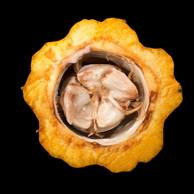 | 可可果 | Theobroma cacao (cacau) open fruit.jpg | Rodrigo.Argenton | CC BY-SA 4.0 | Commons |
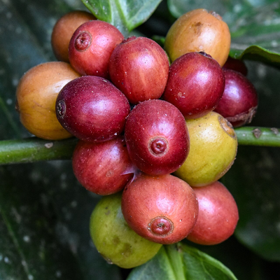 | 咖啡果 | Ripe Seeds Coffee Robusta Coorg Karnataka India Feb24 D72 25688.jpg | This Photo was taken by Timothy A. Gonsalves. Feel free to use my photos, but please ment | CC BY-SA 4.0 | Commons |
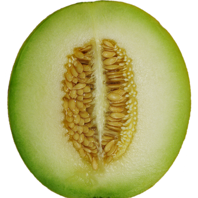 | 哈密瓜 | Cantaloupe Melon cross section.png | Sangfroid | Public domain | Commons |
 | 奇異果 | Kiwifruit, slice.jpg | J.smith | CC BY-SA 3.0 | Commons |
 | 山竹 | Monggis (Mangosteen).jpg | Elaine Mae Yon Jimin | CC BY 4.0 | Commons |
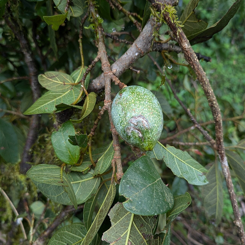 | 愛玉 | Ficus pumila awkeotsang 452195944.jpg | Tzu-Neng Yuan | CC BY 4.0 | Commons |
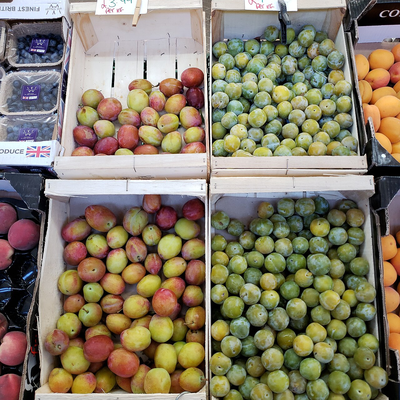 | 李子 | Plums - The Fruit Bowl, Brighton 2023-08-23.jpg | Andy Li | CC0 | Commons |
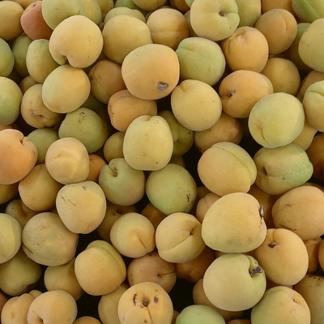 | 杏子 | Yellow apricot (20240603).jpg | Fumikas Sagisavas | CC0 | Commons |
 | 枇杷 | Two loquat fruits.jpg | Franklin Rainier | Public domain | Commons |
 | 柚子 | South Indian Pomello.png | Viswaprabha | CC BY-SA 3.0 | Commons |
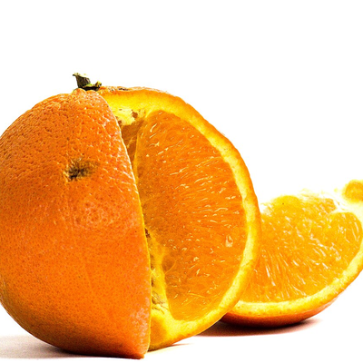 | 柳橙 | Orange Sliced White Background.jpg | AGermanBeck | CC BY-SA 4.0 | Commons |
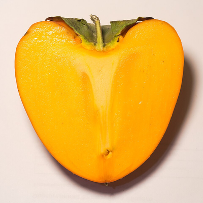 | 柿子 | Хурма-бычьесердце (bull heart persimmons) ноябрь 2025 13.jpg | Retired electrician | CC0 | Commons |
 | 桃子 | Autumn Red peaches.jpg | Jack Dykinga, USDA | Public domain | Commons |
 | 桑葚 | Mulberry fruit (1).jpg | Fumikas Sagisavas | CC0 | Commons |
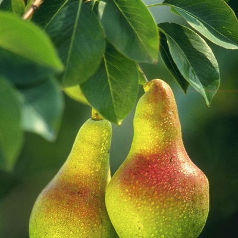 | 梨子 | Pears.jpg | Keith Weller | Public domain | Commons |
 | 棗子 | Jujube cross section.jpg | SilverBullet X | CC0 | Commons |
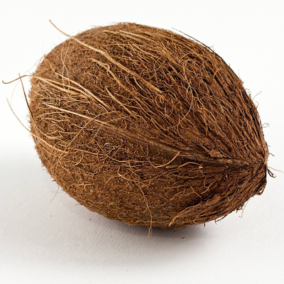 | 椰子 | Oval shaped brown coconut (4268223207).jpg | Old Photo Profile | CC BY 2.0 | Commons |
 | 楊桃 | Carambolas765pt.jpg | K-MUS | CC0 | Commons |
 | 榴槤 | Durian, le fruit qui pue.jpg | Flickr user: burgermac from Pornichet, France | CC BY 2.0 | Commons |
 | 橄欖 | Olea europaea FruitsandLeaves 2009December13 DehesaBoyaldePuertollano.jpg | Javier martin | Public domain | Commons |
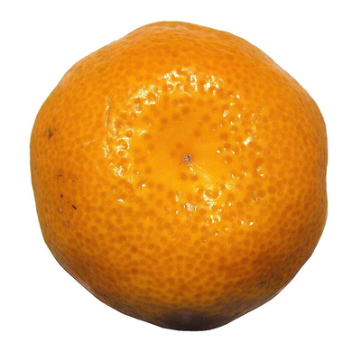 | 橘子 | Mandarin fruit on white background.jpg | Paolo Neo | Public domain | Commons |
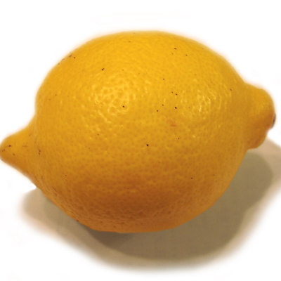 | 檸檬 | Lemon with white background.jpg | Bordercolliez | CC0 | Commons |
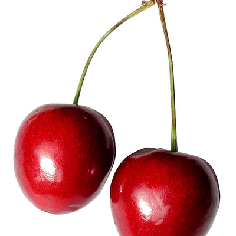 | 櫻桃 | Cherry fruit on white background.jpg | Paolo Neo | Public domain | Commons |
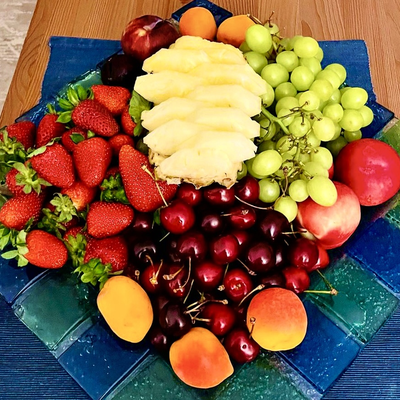 | 水果 | Fruit Platter- Seasonal Fruits.jpg | روتانا | CC BY 4.0 | Commons |
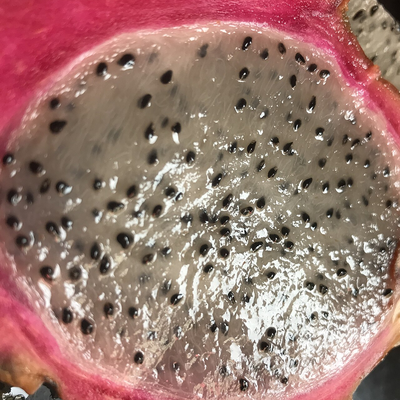 | 火龍果 | Dragon Fruit 02.jpg | Indrajit Das | CC BY-SA 4.0 | Commons |
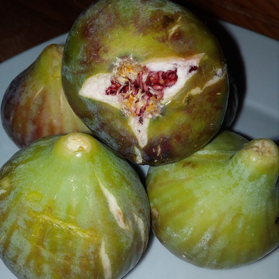 | 無花果 | Ficus carica fruits - ώριμα σύκα.jpg | Ανώνυμος Βικιπαιδιστής | CC BY 3.0 | Commons |
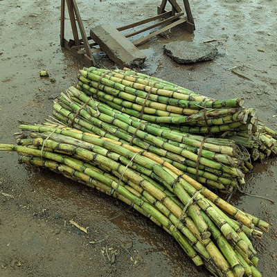 | 甘蔗 | Sugarcane 01.jpg | Ssemmanda will | CC BY-SA 4.0 | Commons |
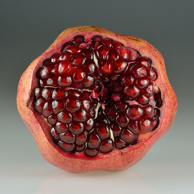 | 石榴 | Pomegranate (opened).jpg | Ivar Leidus | CC BY-SA 4.0 | Commons |
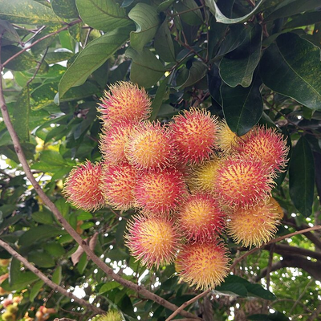 | 紅毛丹 | Rambutan One Kind of Fruit in Indonesia.jpg | Diah Isnawati S | CC0 | Commons |
 | 芒果 | 'Julie' mango on white background.jpg | Filo gèn' | CC BY-SA 4.0 | Commons |
 | 芭樂 | Goiaba vermelha.jpg | Rodrigo.Argenton | CC BY-SA 4.0 | Commons |
 | 草莓 | Strawberry fruit in studio.jpg | Paolo Neo | Public domain | Commons |
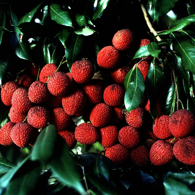 | 荔枝 | Lychee.jpg | Barry Fitzgerald, USDA | Public domain | Commons |
 | 萊姆 | Starr-130504-4383-Citrus latifolia-Tahitian lime fruit-Hawea Pl Olinda-Maui (25092330352).jpg | Forest and Kim Starr | CC BY 3.0 us | Commons |
 | 葡萄 | Green grape cluster on a white background.jpg | Endotoo | CC0 | Commons |
 | 葡萄柚 | Grapefruit (1).jpg | Renee Comet (Photographer) | Public domain | Commons |
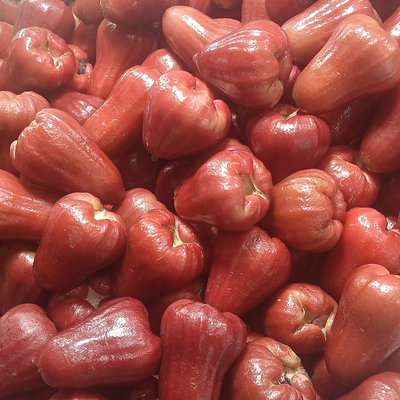 | 蓮霧 | Wax apple (7).jpg | François Nguyen | CC BY 2.0 | Commons |
 | 蔓越莓 | Cranberrys beim Ernten.jpeg | Keith Weller, USDA-ARS | Public domain | Commons |
 | 藍莓 | Blueberries-In-Pack.jpg | Evan-Amos | CC0 | Commons |
 | 蘋果 | Red Apple.jpg | Abhijit Tembhekar from Mumbai, India | CC BY 2.0 | Commons |
 | 蛇皮果 | Salacca zalacca Philippines.jpg | Obsidian Soul | CC0 | Commons |
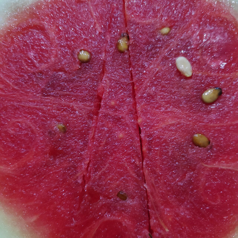 | 西瓜 | Watermelon 3.jpg | Gaurav Dhwaj Khadka | CC BY-SA 4.0 | Commons |
 | 覆盆子 | Framboise Margy 3.jpg | Vassil | Public domain | Commons |
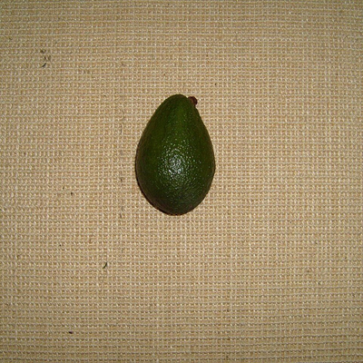 | 酪梨 | Avocado fruit persea americana.jpg | Titus Tscharntke | Public domain | Commons |
 | 醋栗 | Gooseberries.JPG | Pavel Leman | CC BY-SA 3.0 | Commons |
 | 釋迦 | Custard apple 2017.jpg | Leroy Merlin | CC0 | Commons |
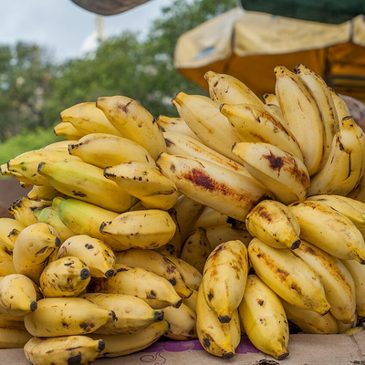 | 香蕉 | Bunch of bananas on sale.jpg | Wilfredor | CC0 | Commons |
 | 鳳梨 | Pineapple on white table.jpg | Julien Pianetti | CC0 | Commons |
 | 黑莓 | Blackberry fruits 2008 G1.jpg | George Chernilevsky | Public domain | Commons |
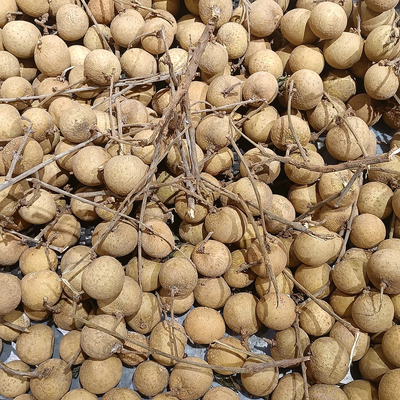 | 龍眼 | Thailand longan.jpg | Fumikas Sagisavas | CC0 | Commons |
科目（詞卡）
| 圖片 | 詞 | 原始檔名 | 作者 | 授權 | 來源 |
|---|---|---|---|---|---|
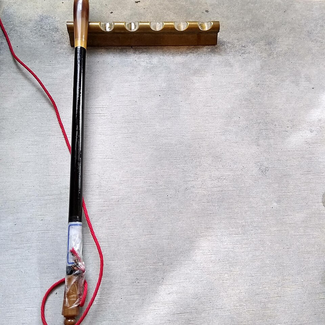 | 國語 | Calligraphy brush at Zhu Jiuying's former residence.jpg | Mx. Granger | CC0 | Commons |
 | 地理 | Terrestrial Globe MET 240594.jpg | Creator:James Wilson | CC0 | Commons |
 | 政治 | 2023 Polish parliamentary election and referendum. October 2023. Ballot box in Tomaszów Mazowiecki, Sikorskiego Street 6A.jpg | WrS.tm.pl | Public domain | Commons |
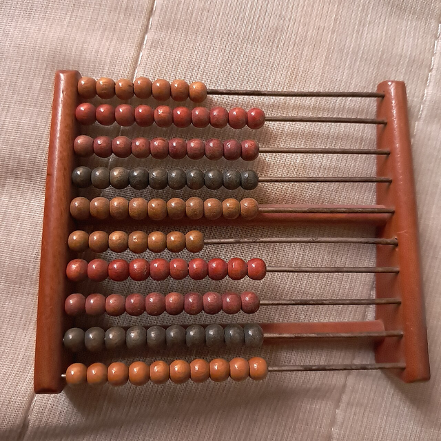 | 數學 | 20th Century Small Wooden Abacus.jpg | Deinodactyla | CC0 | Commons |
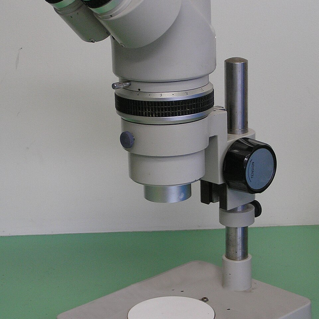 | 生物 | Optical stereo microscope nikon smz10.jpg | GcG(jawp) | Public domain | Commons |
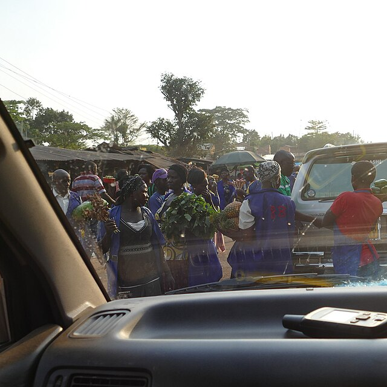 | 社會 | Street market in Uganda - 2015-03-14.jpg | Daniel Aufgang | CC BY 3.0 | Commons |
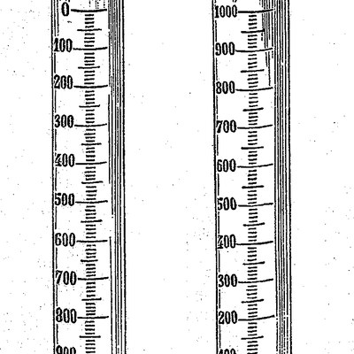 | 科目｜化學 | Graduated chemical glassware (Alessandri 1895.2).png | valeg96 | Public domain | Commons |
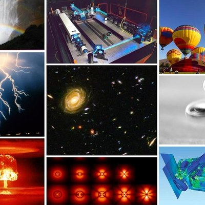 | 科目｜物理 | CollageFisica.jpg | Daniele Pugliesi | Public domain | Commons |
| 科目｜科學 | Barbara McClintock (1902-1992) shown in her laboratory in 1947.jpg | Smithsonian Institution/Science Service; Restored by Adam Cuerden | Public domain | Commons | |
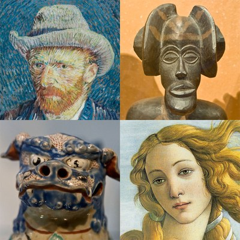 | 科目｜美術 | Art-portrait-collage 2.jpg | User:Husky and h3m3ls, Mischa de Muynck and Niels | CC BY-SA 3.0 | Commons |
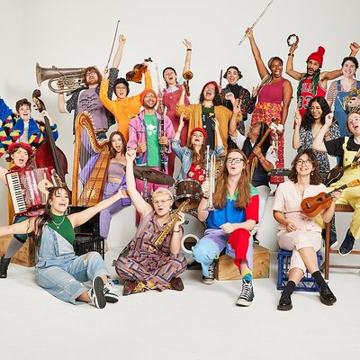 | 科目｜音樂 | Matt Hsu's Obscure Orchestra with instruments.jpg | Planetrecipe | CC BY-SA 4.0 | Commons |
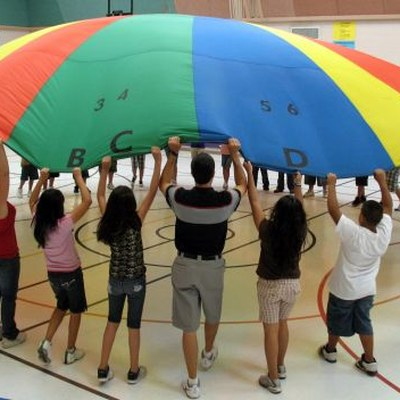 | 科目｜體育 | Pe class.jpg | Linsmaim | CC BY-SA 4.0 | Commons |
 | 英語 | A pile of alphabet wooden blocks.jpg | Bobjgalindo | CC BY 4.0 | Commons |
分類封面
| 圖片 | 詞 | 原始檔名 | 作者 | 授權 | 來源 |
|---|---|---|---|---|---|
 | 五官 | Boy Face from Venezuela.jpg | Wilfredor | CC0 | Commons |
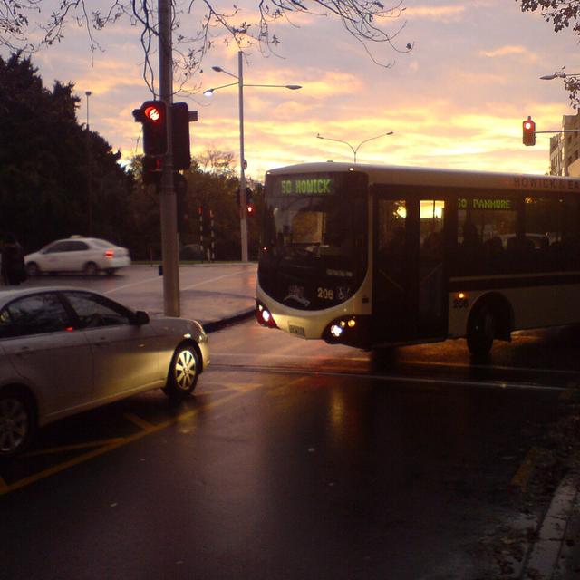 | 交通工具 | Mexican Standoff, Bus Car, Grafton Bridge.jpg | Ingolfson | CC0 | Commons |
 | 公共設施 | Stomatology bus stop, Vorgashor.jpg | Лапоть | CC0 | Commons |
| 動物 | Animal Lion Africa Nature Wildlife Savanna Safari Predator Cat Landscape (257023085).jpeg | Jaco Beukman | CC BY 3.0 | Commons | |
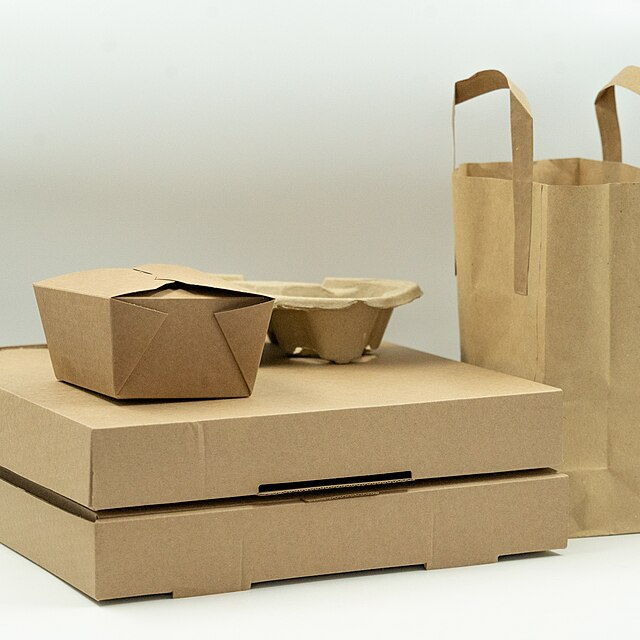 | 包裝 | Eco-friendly cardboard packaging for takeaways.jpg | Meanwell Packaging | CC BY 2.0 | Commons |
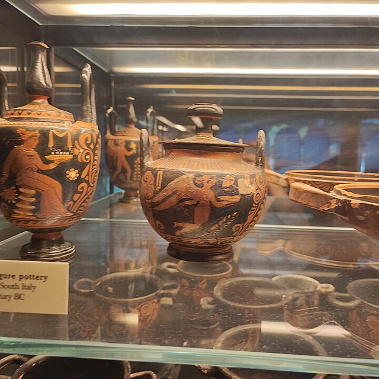 | 古董 | Red figure pottery, Medelhavsmuseet.jpg | StarTrekker | CC0 | Commons |
| 場所 | Yangon, City square, Life on the streets, Myanmar.jpg | Vyacheslav Argenberg | CC BY 4.0 | Commons | |
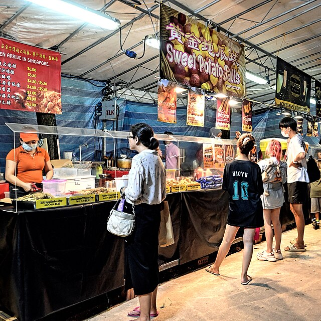 | 夜市小吃 | Taiwanese fried chicken stall in Telok Blangah, Singapore.jpg | Choo Yut Shing | CC BY 2.0 | Commons |
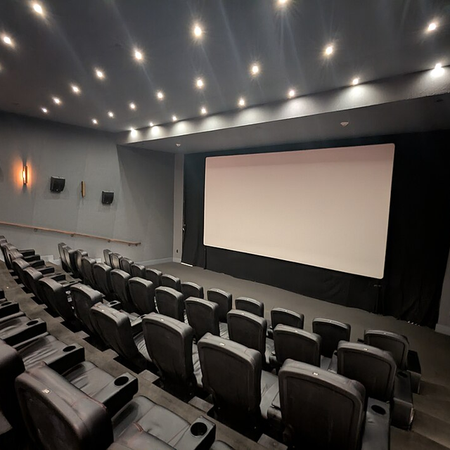 | 娛樂 | Landmark's Atlantic Plumbing Cinema screening room.jpg | Sdkb | CC BY-SA 4.0 | Commons |
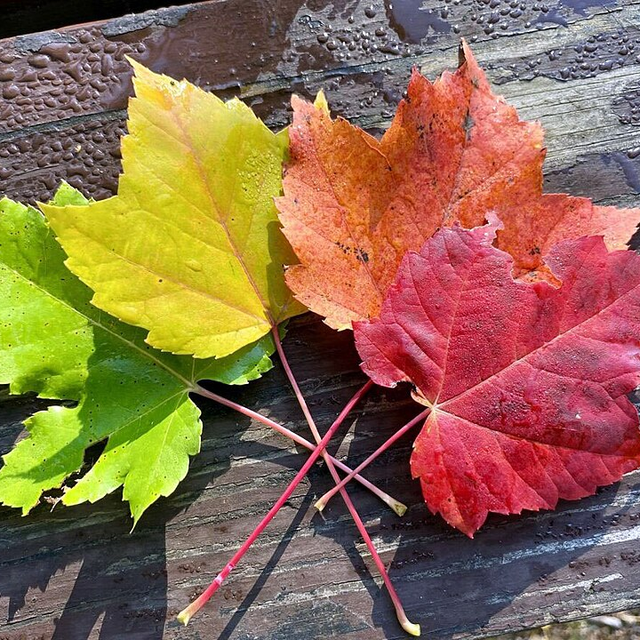 | 季節 | Fall Colors 2023 (20230921-FS-Ottawa-SS-002).jpg | usfs_Eastern_Region | Public domain | Commons |
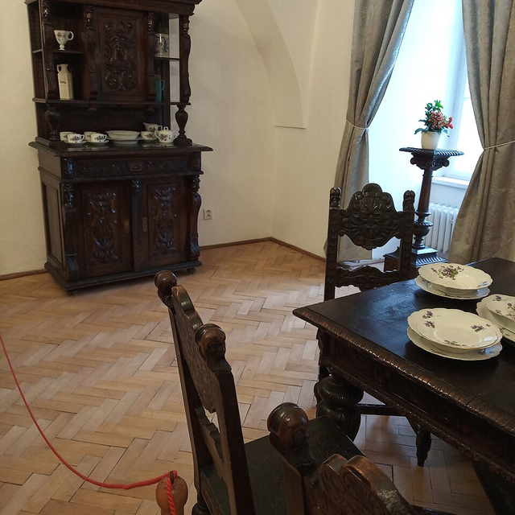 | 家具 | Vihorlat Museum in Humenné - History and art history permanent exhibition - Kitchen and dining hall furniture exhibit room - Cupboard and dining table with porcelain tableware and chairs (September 2026).jpg | ZemplinTemplar | CC BY-SA 4.0 | Commons |
| 實驗器材 | CSIRO ScienceImage 7607 flasks.jpg | CSIRO, CSIRO | CC BY 3.0 | Commons | |
| 居家空間 | Spacious Living Room Interior Design in Kolkata by Estate Lookup Interiors.png | Estate Lookup Interiors | CC0 | Commons | |
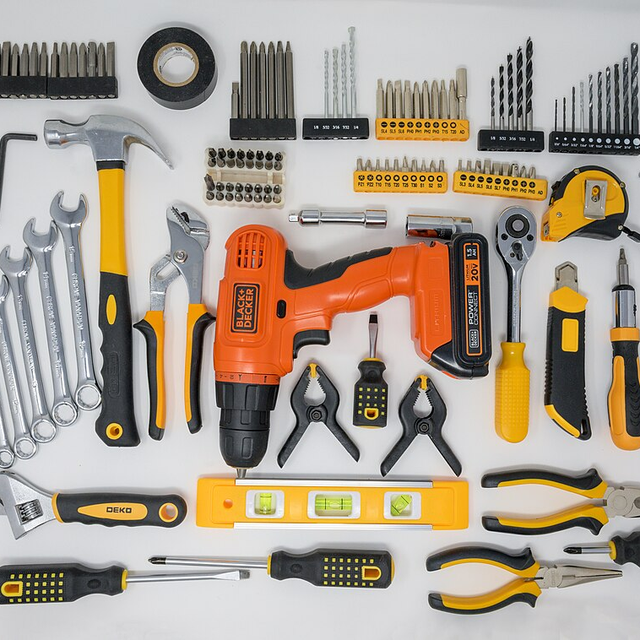 | 工具 | Tools 66.jpg | Wilfredor | CC0 | Commons |
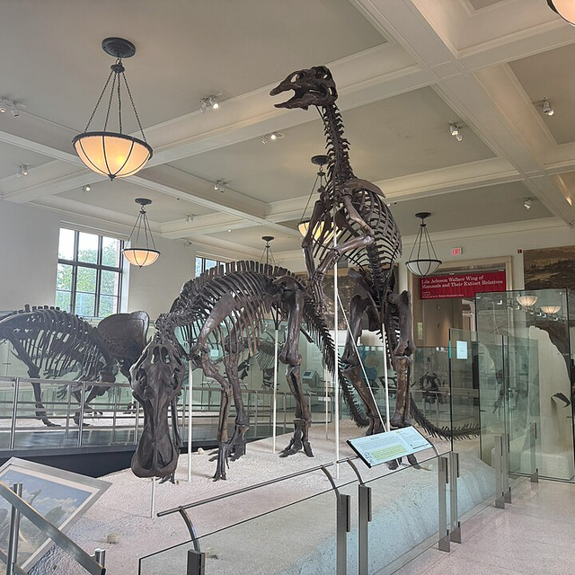 | 恐龍 | Duck-Billed Dinosaur skeletons at American Museum of Natural History.jpg | Vicpeters | CC BY 4.0 | Commons |
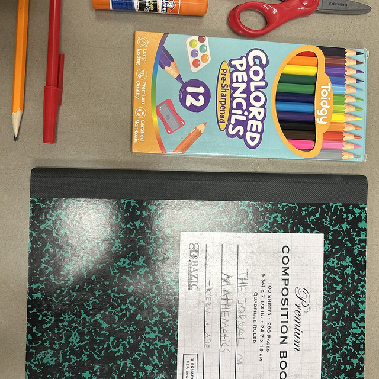 | 文具 | School Supplies.jpg | TheUltimateGrass | CC0 | Commons |
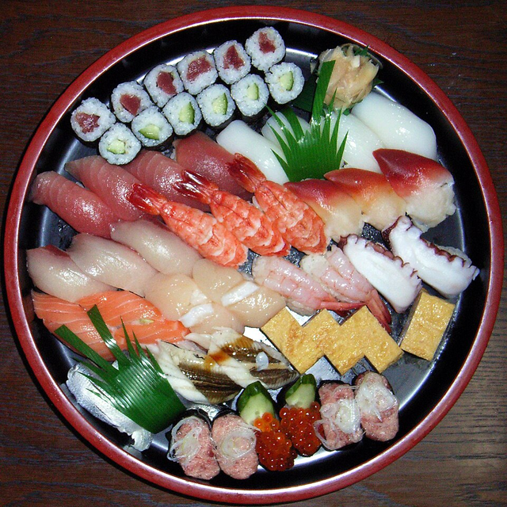 | 日本料理 | Sushi platter.jpg | chidorian from Japan | CC BY-SA 2.0 | Commons |
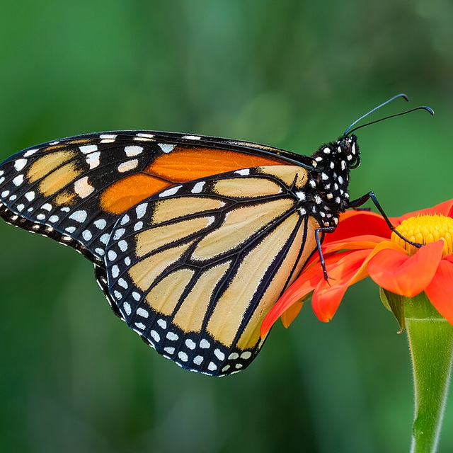 | 昆蟲 | Monarch butterfly male (52341).jpg | Rhododendrites | CC BY-SA 4.0 | Commons |
| 星期週 | Hands of a woman writing notes in her planner closeup.jpg | Shixart1985 | CC BY 2.0 | Commons | |
 | 星球 | Jupiter OPAL 2024.png | NASA/STSCI (S.T.A.R.S) | Public domain | Commons |
| 時段 | Sunrise Surge - North Inlet, Delaware Seashore State Park - Flickr - aparlette.jpg | Andrew Parlette from Elkridge,MD, US | CC BY 4.0 | Commons | |
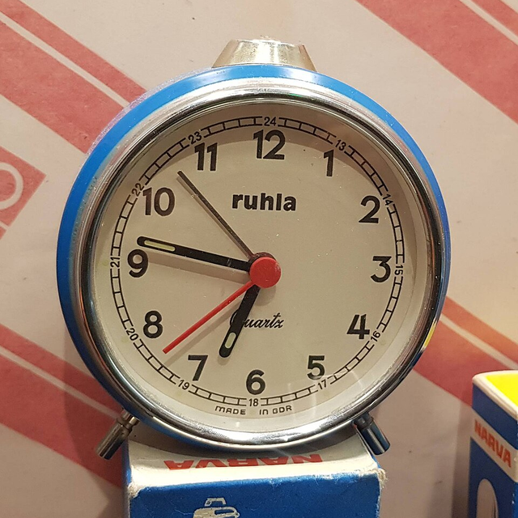 | 時間 | 2019-08-08 Ruhla alarm clock.jpg | Maksym Kozlenko | CC BY-SA 4.0 | Commons |
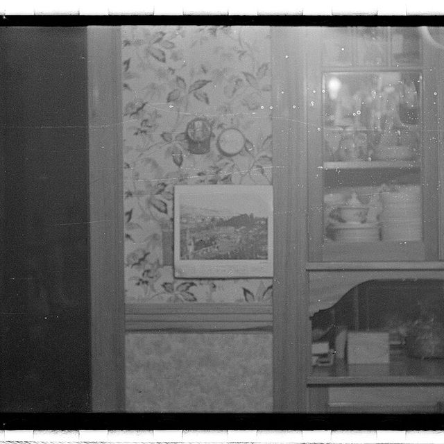 | 月份 | Calendar on wall - DPLA - 1b7b70c03a8e3a49d7c74ceab6396d5d.jpg | Sanromá, John B., 1900-1997 | Public domain | Commons |
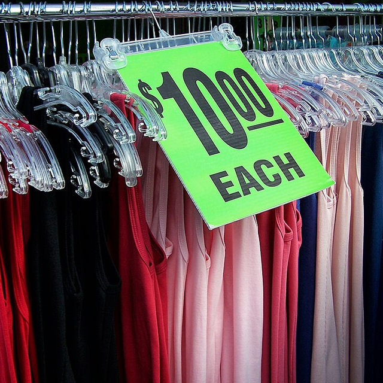 | 服飾 | Clothes... (58987235).jpg | Diego Torres Silvestre from Sao Paulo, Brazil | CC BY 2.0 | Commons |
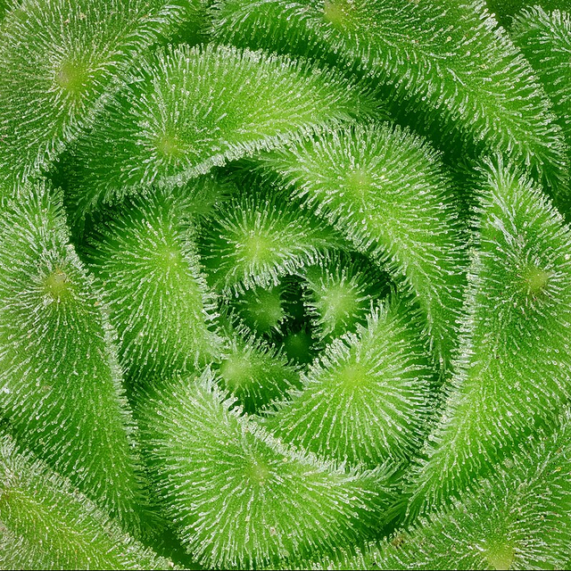 | 植物 | Sempervivum montanum - close up.jpg | Mister rf | CC BY-SA 4.0 | Commons |
| 爬蟲類 | Gold Dust Day Gecko closeup hawaii edit 1.jpg | KeysPhotography.com | CC BY 4.0 | Commons | |
| 甜點 | Paris pastries shop - Mille-feuille - Baba au rhum.jpg | jimmyweee | CC BY 2.0 | Commons | |
| 生鮮食品 | Produce section in Lotte Plaza Market, Tampa, Florida, on 15 January 2025 (01).jpg | MatthewHoobin | CC0 | Commons | |
 | 科目 | Old Gresham School Classroom - DPLA - a3b1f9cb951d10b6e8b7d8591436e206.jpg | — | Public domain | Commons |
| 蔬菜 | Fresh Vegetables display in Iloilo Terminal Public Market 01.jpg | OnlyJanz | CC BY-SA 4.0 | Commons | |
| 調味料 | Derech Hatavlinim 02.jpg | Hoshvilim | CC BY-SA 4.0 | Commons | |
| 速食 | Hamburger with blue cheese, guacamole, and other toppings, plus French fries - Massachusetts.jpg | Daderot | CC0 | Commons | |
| 遊樂園設施 | Baishamen Park - amusement park - ferris wheel - 01.jpg | Anna Frodesiak | CC0 | Commons | |
| 遊樂場設施 | Krakow Kozłówek - slide on a playground for children.JPG | Wuhazet (Henryk Żychowski) | CC BY 3.0 | Commons | |
| 運動 | Lejeune boys soccer defeats Pender, 5-1 130912-M-IY869-363.jpg | Lance Cpl. Jackeline Perez Rivera | Public domain | Commons | |
| 零件 | Bolt nut (retouch).jpg | Obviously (original autohor) | CC BY-SA 4.0 | Commons | |
| 電器 | EFTA00001253 - Professional kitchen with stainless steel appliances a black-and-white checkered floor and ample counter space.jpg | Federal Bureau of Investigation | Public domain | Commons | |
| 電腦硬體 | Computer motherboard 10.jpg | Kurt Kaiser | CC0 | Commons | |
| 飲料 | Oranges and orange juice.jpg | USDA photo by Scott Bauer. Image Number K7237-8. | Public domain | Commons | |
| 餐具 | Elegant table setting with vintage china and golden cutlery at a dining occasion.jpg | Shixart1985 | CC BY 2.0 | Commons | |
 | 體內器官 | Numbered organs 1.png | RWhitwam | CC BY-SA 4.0 | Commons |
| 魚類 | Pez ángel real (Holacanthus passer), Cabo Pulmo, Baja California, México, 2024-12-19, DD 25.jpg | Diego Delso | CC BY-SA 4.0 | Commons | |
| 鳥類 | White-crowned sparrow perched at Llano Seco.jpg | Frank Schulenburg | CC BY-SA 4.0 | Commons |
詞卡｜五官
| 圖片 | 詞 | 原始檔名 | 作者 | 授權 | 來源 |
|---|---|---|---|---|---|
| 五官｜五官 | Human faces.jpg | Autisticeditor 20 | CC BY-SA 4.0 | Commons | |
| 五官｜嘴巴 | Close up man lips.jpg | Kajoovi | CC BY-SA 4.0 | Commons | |
| 五官｜眼睛 | Krilleyekils.jpg | Gerd Alberti and Uwe Kils | CC BY-SA 3.0 | Commons | |
| 五官｜耳朵 | Human right ear (cropped).jpg | Genusfotografen (Tomas Gunnarsson) / Wikimedia Sverige | CC BY-SA 4.0 | Commons | |
| 五官｜鼻子 | Canine Nose Macro Photo.png | Metography | CC BY-SA 4.0 | Commons |
詞卡｜交通工具
| 圖片 | 詞 | 原始檔名 | 作者 | 授權 | 來源 |
|---|---|---|---|---|---|
| 交通工具｜三輪車 | Shanghai recycling transport tricycle.jpg | Ermell | CC BY-SA 4.0 | Commons | |
| 交通工具｜交通工具 | Manchester Transport Montage.jpg | File:Tram Across the Mersey, David Dixon, 4237015.jpg → David Dixon File:Manchester Termin | CC BY-SA 3.0 | Commons | |
| 交通工具｜人力車 | JapaneseRickshaw.jpg | — | Public domain | Commons | |
| 交通工具｜公車 | Autobus Police Vehixel.jpg | Jebulon | CC0 | Commons | |
| 交通工具｜古董車 | Weird classic car I saw at work.jpg | TheSaturnLover | CC0 | Commons | |
| 交通工具｜叮叮車 | Muzeum MHD, tramvaje T3 8084 a 6149, zepředu.jpg | ŠJů (cs:ŠJů) | CC BY-SA 3.0 | Commons | |
| 交通工具｜吉普車 | Jeep Wrangler Rubicon 392 IMG 7673.jpg | Alexander-93 | CC BY-SA 4.0 | Commons | |
| 交通工具｜吊卡車 | Manitex telescopic boom truck crane.jpg | Gogerr | CC BY-SA 4.0 | Commons | |
| 交通工具｜吊車 | Telescopic Truck Mounted Crane.jpg | Oleg Yunakov | CC0 | Commons | |
| 交通工具｜嘟嘟車 | Bajaj auto-rickshaw in Sri Lanka.jpg | calflier001, cropped by uploader Mr.choppers | CC BY-SA 2.0 | Commons | |
| 交通工具｜噴射機 | Private jet at Glasgow Airport - geograph.org.uk - 5440951.jpg | Thomas Nugent | CC BY-SA 2.0 | Commons | |
| 交通工具｜垃圾車 | Moscow, Isuzu truck with garbage compactor, Aug 2025 01.jpg | Retired electrician | CC0 | Commons | |
| 交通工具｜堆高機 | TCM FORKLIFT (3).jpg | Dinkun Chen | CC BY-SA 4.0 | Commons | |
| 交通工具｜壓路機 | John Deere roller, U.S. Navy, Camp Covington, NMCB-133, 080928-N-1106H-001.jpg | Builder 2nd Class Stuart Helvie, U.S. Navy (U.S. Navy photo) | Public domain | Commons | |
| 交通工具｜太空梭 | STS120LaunchHiRes-edit1.jpg | NASA; edited by jjron (tilt corrected) | Public domain | Commons | |
| 交通工具｜帆船 | Eye-of-the-wind-2010.jpg | Karlheinz Hagen | CC BY-SA 3.0 | Commons | |
| 交通工具｜快艇 | Motorboat Ryds 435DL and cloud reflections in Sämstad harbor 3.jpg | W.carter | CC BY-SA 4.0 | Commons | |
| 交通工具｜戰車 | British Centurion Main Battle Tank (Ank Kumar, Infosys Limited) 02.jpg | Ank Kumar | CC BY-SA 4.0 | Commons | |
| 交通工具｜戰鬥機 | Formation of a Legacy, Heritage flight merges aviation past and present 86-16-51-22.jpg | U.S. Air Force photo by J.M. Eddins Jr | Public domain | Commons | |
| 交通工具｜拖吊車 | Cronacher.haltend.JPG | User:Mattes | Public domain | Commons | |
| 交通工具｜拖拉機 | Ford 8N.jpg | Mulad | CC BY 2.0 | Commons | |
| 交通工具｜挖土機 | Caterpillar 302.7D excavator on Barrow Street.jpg | Grendelkhan | CC BY-SA 4.0 | Commons | |
| 交通工具｜捷運 | Train arriving at Passy metro station in April 2019.jpg | Nick-D | CC BY-SA 4.0 | Commons | |
| 交通工具｜推土機 | CatD9T.jpg | Shaun Greiner | CC BY-SA 2.0 | Commons | |
| 交通工具｜摩托車 | Istockphoto-114285168-612x612.jpg | Devanand.j | CC BY-SA 4.0 | Commons | |
| 交通工具｜救護車 | British Red Cross (BRC) Rapid Response Vehicle (RRV) Ambulance 1.jpg | Fbo194 | CC BY-SA 4.0 | Commons | |
| 交通工具｜敞篷車 | Peugeot-204-cabriolet-de-1968-rouge-China-1135-villegiature-arriere.jpg | Rundvald | CC BY-SA 4.0 | Commons | |
| 交通工具｜施救車 | DongFeng tow truck, Korle-Klottey (P1090871).jpg | Matti Blume | CC BY-SA 4.0 | Commons | |
| 交通工具｜校車 | HCS bus49.JPG | William J. Grimes, aka User:William Grimes | Public domain | Commons | |
| 交通工具｜水上摩托車 | Sea Doo LRV.JPG | 原上传者为英语維基百科的Chris S | CC BY-SA 3.0 | Commons | |
| 交通工具｜水上飛機 | Grumman HU-16D Albatross Chalks MIA 03.87.jpg | RuthAS | CC BY 3.0 | Commons | |
| 交通工具｜水泥泵浦車 | Concrete pump truck - Arlington, MA.jpg | Daderot | CC0 | Commons | |
| 交通工具｜水泥車 | Goldsun Building Materials concrete mixer truck 671-BL 20161016.jpg | Padai | CC BY-SA 4.0 | Commons | |
| 交通工具｜水翼船 | "Meteor-197" hydrofoil in Saint Petersburg, Russia. 06-2022.jpg | Bestalex | CC BY-SA 4.0 | Commons | |
| 交通工具｜汽車 | 2005 Toyota Corolla (ZZE122R 5Y) Ascent sedan 01.jpg | Celica21gtfour at English Wikipedia | CC BY 3.0 | Commons | |
| 交通工具｜汽車運載車 | Car carrier loading Maybach in Tokyo.jpg | Syced | CC0 | Commons | |
| 交通工具｜油罐車 | Cape Cod Oil truck.jpg | Connor Williams | CC BY 2.0 | Commons | |
| 交通工具｜油輪 | Supertanker AbQaiq.jpg | — | Public domain | Commons | |
| 交通工具｜消防車 | LFB Pump Ladder.jpg | 英语維基百科的Jackus2008 | Public domain | Commons | |
| 交通工具｜漁船 | Krabbenkutter Ivonne Pellworm P5242390jm.JPG | The original uploader was Jom at German Wikipedia. | CC BY-SA 2.0 de | Commons | |
| 交通工具｜潛水艇 | US Navy 040730-N-1234E-002 PCU Virginia (SSN 774) returns to the General Dynamics Electric Boat shipyard.jpg | U.S. Navy photo by General Dynamics Electric Boat | Public domain | Commons | |
| 交通工具｜灑水車 | Water truck watering flowers.jpg | JimmyDude27 | CC0 | Commons | |
| 交通工具｜火箭 | Soyuz TMA-9 launch.jpg | Bill Ingalls | Public domain | Commons | |
| 交通工具｜火車 | Поезд на фоне горы Шатрище. Воронежская область.jpg | Алексей Задонский | CC BY-SA 4.0 | Commons | |
| 交通工具｜無人機 | CBP Unmanned aerial vehicle.jpg | Gerald Nino | Public domain | Commons | |
| 交通工具｜熱氣球 | 2006 Ojiya balloon festival 011.jpg | Kropsoq | CC BY-SA 3.0 | Commons | |
| 交通工具｜獨木舟 | Woman paddling a canoe on the Sangha River.jpg | JosepMGracia | CC BY-SA 4.0 | Commons | |
| 交通工具｜獨輪車 | Jamesunicycle.jpg | BuckyB89 | CC BY-SA 4.0 | Commons | |
| 交通工具｜登機梯車 | Stairs on aircraft.JPG | Me | CC BY-SA 3.0 | Commons | |
| 交通工具｜直升機 | LAPD Bell 206 Jetranger.jpg | Mfield - Matthew Field, http://www.photography.mattfield.com | CC BY 2.5 | Commons | |
| 交通工具｜砂石車 | Freightliner M2 106 6x4 2014 (14240376744).jpg | order_242 from Chile | CC BY-SA 2.0 | Commons | |
| 交通工具｜破冰船 | 120106-G-IA651-272 (6668116881).jpg | U.S. Department of Defense Current Photos | Public domain | Commons | |
| 交通工具｜筏 | Huck and jim on raft.jpg | — | Public domain | Commons | |
| 交通工具｜箱型車 | Toyota Hiace H200 511.JPG | 天然ガス | CC BY-SA 3.0 | Commons | |
| 交通工具｜纜車 | Israel Aerial Ropeway Masada BW 1.jpg | Berthold Werner | Public domain | Commons | |
| 交通工具｜腳踏車 | Left side of Flying Pigeon.jpg | 齐健 from Peking, People's Republic of China | CC BY 2.0 | Commons | |
| 交通工具｜航機拖車 | KLM 777 pushback.jpg | — | CC BY-SA 2.0 | Commons | |
| 交通工具｜船 | Motorboat at Kankaria lake.JPG | Kondicherry | CC BY-SA 3.0 | Commons | |
| 交通工具｜計程車 | Public transport share taxi in Maracaibo city, Zulia, Venezuela.jpg | Wilfredor | CC0 | Commons | |
| 交通工具｜警車 | 20221113 Roewe RX5 police car in Zhengzhou.jpg | Windmemories | CC BY-SA 4.0 | Commons | |
| 交通工具｜貢多拉 | Gondola Ride.jpg | Njsmith3 | CC BY-SA 4.0 | Commons | |
| 交通工具｜貨櫃船 | MAERSK MC KINNEY MÖLLER & MARSEILLE MAERSK (48694054418).jpg | kees torn | CC BY-SA 2.0 | Commons | |
| 交通工具｜貨車 | Colfrance truck, Colombia.jpg | Bernard Gagnon | CC BY-SA 4.0 | Commons | |
| 交通工具｜越野車 | S404-300TDI-erg-chebbi.jpg | Fvanweerdenburg | CC BY-SA 2.5 | Commons | |
| 交通工具｜跑車 | 1996 Porsche 911 993 GT2 - Flickr - The Car Spy (4).jpg | The Car Spy | CC BY 2.0 | Commons | |
| 交通工具｜輕軌 | Gold Line train on East 1st Street, July 2017.JPG | Pi.1415926535 | CC BY-SA 3.0 | Commons | |
| 交通工具｜輪船 | Waverley at Swanage.jpg | Herbythyme | CC BY-SA 4.0 | Commons | |
| 交通工具｜轎子 | Sedan-chair.jpg | — | Public domain | Commons | |
| 交通工具｜連結車 | Peterbilt 359 Classic (1977) pic2.JPG | AlfvanBeem | CC0 | Commons | |
| 交通工具｜遊輪 | Explorer of the Seas, Fremantle, 2015 (03).JPG | Bahnfrend | CC BY-SA 4.0 | Commons | |
| 交通工具｜郵務車 | USPS Mercedes-Benz Metris Mail Truck 2021; Taylor, Michigan.jpg | Cookieman1.1.1 | CC BY-SA 4.0 | Commons | |
| 交通工具｜鏟雪車 | TowPLow front view2.JPG | SnowKing1 | CC BY-SA 3.0 | Commons | |
| 交通工具｜雙層巴士 | Abellio LT157 (LTZ1157) Holborn Viaduct 20.01.2024.jpg | Martin Ruthe's Transport Photos | CC BY-SA 2.0 | Commons | |
| 交通工具｜雙翼機 | Sopwith Camel - Season Premiere Airshow 2018 (42058141172).jpg | Airwolfhound from Hertfordshire, UK | CC BY-SA 2.0 | Commons | |
| 交通工具｜雪地摩托車 | SnowmobilesYellowstone.jpg | (NPS Photo), uploaded by en:User:Great Scott. | Public domain | Commons | |
| 交通工具｜雪橇 | Volunteer Mushing on Wonder Lake (7065286379).jpg | Denali National Park and Preserve | Public domain | Commons | |
| 交通工具｜雲梯車 | Lafd ladder truck.jpg | Mfield, Matthew Field, http://www.photography.mattfield.com | CC BY-SA 3.0 | Commons | |
| 交通工具｜露營車 | White Fiat Ducato Campervan 2006.jpg | User3204 | CC BY 4.0 | Commons | |
| 交通工具｜飛機 | Aeroflot Airbus A330 Kustov.jpg | Sergey Kustov | CC BY-SA 3.0 | Commons | |
| 交通工具｜飛行船 | Zeppellin NT amk.JPG | AngMoKio | CC BY-SA 3.0 | Commons | |
| 交通工具｜馬車 | Horse carriage, Gwalior.jpg | Yann (talk) | CC BY-SA 4.0 | Commons | |
| 交通工具｜高空作業車 | Man Multitel cherry picker. Blokha 2.jpg | Alex Blokha | CC BY-SA 4.0 | Commons | |
| 交通工具｜高鐵 | JR Series-N700S-J30 Nozomi-4.jpg | MaedaAkihiko | CC BY-SA 4.0 | Commons | |
| 交通工具｜鴨子車 | Duck Boat, Branson, MO.jpg | David Wills | CC BY-SA 4.0 | Commons |
詞卡｜公共設施
| 圖片 | 詞 | 原始檔名 | 作者 | 授權 | 來源 |
|---|---|---|---|---|---|
| 公共設施｜下水道口 | ManholePMG gobeirne.jpg | Photograph by Greg O'Beirne | CC BY 2.5 | Commons | |
| 公共設施｜交通錐 | Cones.jpg | Norman Rogers | Public domain | Commons | |
| 公共設施｜人行道 | Sidewalk - Cambridge, MA - DSC05037.jpg | Daderot | CC0 | Commons | |
| 公共設施｜公共設施 | GIRL WITH BOOK AND BENCH-SITTERS IN FOUNTAIN SQUARE - NARA - 553222.jpg | Tom Hubbard | Public domain | Commons | |
| 公共設施｜噴泉 | Fountains Collage.jpg | Eme Chicano | CC BY-SA 3.0 | Commons | |
| 公共設施｜手扶梯 | Copenhagen Metro escalators.jpg | Stig Nygaard from Copenhagen, Denmark | CC BY 2.0 | Commons | |
| 公共設施｜提款機 | Früher Bankautomat von Nixdorf.jpg | photo taken by: de:User:Stahlkocher | CC BY-SA 3.0 | Commons | |
| 公共設施｜斑馬線 | Pedestrian crossing in the south-eastern part of Kościuszko Square, the main square of Tomaszów Mazowiecki, Poland.jpg | WrS.tm.pl | Public domain | Commons | |
| 公共設施｜樓梯 | Spiral stairs (Art Deco, Nebotičnik, Ljubljana).jpg | Petar Milošević | CC BY-SA 4.0 | Commons | |
| 公共設施｜橋 | General Rafael Urdaneta Bridge view from the lake to Cabimas side.jpg | Wilfredor | CC0 | Commons | |
| 公共設施｜消防栓 | Downtown Charlottesville fire hydrant.jpg | Ben Schumin | CC BY-SA 2.5 | Commons | |
| 公共設施｜紅綠燈 | Modern British LED Traffic Light.jpg | Unisouth | CC BY 3.0 | Commons | |
| 公共設施｜自動販賣機 | CandiesVendingMachine1952.jpg | Minnesota Historical Society | CC BY-SA 2.0 | Commons | |
| 公共設施｜路燈 | Paris, Notre Dame -- 2014 -- 1479.jpg | Dietmar Rabich | CC BY-SA 4.0 | Commons | |
| 公共設施｜郵筒 | Civray 86 Post-box 2012.jpg | JLPC | CC BY-SA 3.0 | Commons | |
| 公共設施｜長椅 | Garden bench 001.jpg | — | CC BY-SA 2.0 | Commons | |
| 公共設施｜電動步道 | Munich Airport T1 L3 walkway.jpg | Aconcagua | CC BY-SA 3.0 | Commons | |
| 公共設施｜電梯 | Elevator in Chongqing.jpg | 重庆轨交18 | CC BY-SA 4.0 | Commons | |
| 公共設施｜電線杆 | SIF-Overhead-Wires-1-Cropped.jpg | No machine-readable author provided. Silenceisfoo~commonswiki assumed (based on copyright | Public domain | Commons | |
| 公共設施｜電話亭 | Lightmatter phonebooths ( South Lake, Pasadena, California).jpg | Aaron Logan | CC BY 2.5 | Commons | |
| 公共設施｜馬路 | Autre rue principale de Pékin ; les bas côtés se trouvent en contre-bas de la chaussée centrale, on voit à gauche divers types d’enseignes.jpg | Jean-Bernard Calmel | Public domain | Commons |
詞卡｜動物
| 圖片 | 詞 | 原始檔名 | 作者 | 授權 | 來源 |
|---|---|---|---|---|---|
| 動物｜乳牛 | Koe in weiland bij Gorssel.JPG | picture by User:Ellywa | CC BY-SA 3.0 | Commons | |
| 動物｜兔子 | Oryctolagus cuniculus Rcdo.jpg | JM Ligero Loarte | CC BY 3.0 | Commons | |
| 動物｜刺蝟 | Igel.JPG | Gibe | CC BY-SA 3.0 | Commons | |
| 動物｜動物 | Animal diversity b.png | Chiswick Chap | CC BY-SA 4.0 | Commons | |
| 動物｜大象 | Elephant running.jpg | Byrdyak | CC BY-SA 4.0 | Commons | |
| 動物｜山羊 | Hausziege 04.jpg | Kuebi = Armin Kübelbeck | CC BY-SA 3.0 | Commons | |
| 動物｜松鼠 | Red squirrel eating hazel nut.jpg | Evas-naturfotografie | CC BY-SA 4.0 | Commons | |
| 動物｜樹懶 | Bicho-preguiça 3.jpg | Daniella Maraschiello | CC BY-SA 4.0 | Commons | |
| 動物｜水豚 | Capivara(Hydrochoerus hydrochaeris).jpg | Clodomiro Esteves Junior | CC BY-SA 4.0 | Commons | |
| 動物｜河馬 | Hippopotamus.jpg | Martin Olsson | CC BY-SA 3.0 | Commons | |
| 動物｜海獅 | Sealion052006.JPG | David Corby | CC BY 2.5 | Commons | |
| 動物｜海豚 | Tursiops truncatus 01.jpg | NASA | Public domain | Commons | |
| 動物｜海象 | Walrus.jpg | Andrew Trites, NOAA | CC BY 2.0 | Commons | |
| 動物｜海豹 | Harbour seal.jpg | Matthews, Sue | Public domain | Commons | |
| 動物｜無尾熊 | Koala climbing tree.jpg | Diliff | CC BY-SA 3.0 | Commons | |
| 動物｜犀牛 | Indian Rhinoceros.jpg | — | CC BY-SA 2.0 | Commons | |
| 動物｜狐獴 | Meerkat (Suricata suricatta) Tswalu.jpg | Charles J. Sharp | CC BY-SA 4.0 | Commons | |
| 動物｜狗 | Coat types 3.jpg | Томасина, Taru T Torpström, Tuomas Rinta, danny O., Pat028, Sevenfatdogs, whartonds, danci | CC BY 2.5 | Commons | |
| 動物｜猴子 | Ubud Monkey Family.jpg | Deerpeter | CC BY-SA 4.0 | Commons | |
| 動物｜獅子 | Lion waiting in Namibia.jpg | Kevin Pluck | CC BY 2.0 | Commons | |
| 動物｜白鯨 | Oceanogràfic 29102004.jpg | Javier Yaya Tur / CIUDAD DE LAS ARTES Y LAS CIENCIAS from Valencia, España | CC BY 2.0 | Commons | |
| 動物｜綿羊 | Flock of sheep.jpg | Keith Weller | Public domain | Commons | |
| 動物｜老虎 | Panthera tigris tigris in Bandhavgarh National Park, 2006-05.jpg | Anant Ramakrishnan | CC BY-SA 2.5 | Commons | |
| 動物｜老鼠 | Мышь 2.jpg | George Shuklin (talk) | CC BY-SA 1.0 | Commons | |
| 動物｜虎鯨 | Killerwhales jumping.jpg | Robert Pittman | Public domain | Commons | |
| 動物｜蝙蝠 | Big-eared-townsend-fledermaus.jpg | PD-USGov, exact author unknown | Public domain | Commons | |
| 動物｜袋鼠 | Macropus giganteus - Brunkerville.jpg | JJ Harrison (https://www.jjharrison.com.au/) | CC BY-SA 4.0 | Commons | |
| 動物｜豪豬 | Porcupine-BioDome.jpg | J. Glover | CC BY-SA 2.5 | Commons | |
| 動物｜豬 | Sow with piglet.jpg | Scott Bauer, USDA | Public domain | Commons | |
| 動物｜豹 | Panthera pardus close up.jpg | tropicaLiving | CC BY-SA 3.0 | Commons | |
| 動物｜貓咪 | Siam lilacpoint.jpg | Karin Langner-Bahmann, upload von Martin Bahmann | CC BY-SA 3.0 | Commons | |
| 動物｜貓熊 | Giant Panda at Singapore River Safari.jpg | Michael Gwyther-Jones | CC BY 2.0 | Commons | |
| 動物｜長頸鹿 | Two male giraffes are necking in San Francisco Zoo.jpg | Brocken Inaglory | CC BY-SA 3.0 | Commons | |
| 動物｜馬 | Nokota Horses cropped.jpg | Nokota_Horses.jpg: François Marchal derivative work: Dana boomer (talk) | CC BY-SA 3.0 | Commons | |
| 動物｜駱駝 | 07. Camel Profile, near Silverton, NSW, 07.07.2007.jpg | Jjron | CC BY-SA 3.0 | Commons | |
| 動物｜騾子 | Pack Mules Waiting (15755930793).jpg | Pacific Southwest Region 5 | Public domain | Commons | |
| 動物｜驢子 | Donkey in Clovelly, North Devon, England.jpg | Adrian Pingstone | Public domain | Commons | |
| 動物｜鯨魚 | Southern right whale.jpg | Michaël CATANZARITI | CC BY-SA 3.0 | Commons |
詞卡｜包裝
| 圖片 | 詞 | 原始檔名 | 作者 | 授權 | 來源 |
|---|---|---|---|---|---|
| 包裝｜包裝 | Flipper Zero retail cardboard packaging box top view.jpg | Siarhei V | CC BY-SA 4.0 | Commons | |
| 包裝｜噴霧罐 | Aerosol.png | PiccoloNamek | CC BY-SA 3.0 | Commons | |
| 包裝｜寶特瓶 | Antifreeze.jpg | dno1967 | CC BY 2.0 | Commons | |
| 包裝｜廣口瓶 | Jar of yeast extract.jpg | SKopp | CC BY-SA 3.0 | Commons | |
| 包裝｜捲 | Enyclopedia Britannica International Chinese Edition.jpg | Hawyih | CC BY 3.0 | Commons | |
| 包裝｜新鮮屋 | Several Cartons.jpg | Rlsheehan at English Wikipedia | Public domain | Commons | |
| 包裝｜易開罐 | Drinking can ring-pull tab.jpg | Marcos André | CC BY 2.0 | Commons | |
| 包裝｜盒子 | Box.agr.jpg | ArnoldReinhold | CC BY-SA 3.0 | Commons | |
| 包裝｜罐頭 | Empty tin can2009-01-19.jpg | Sun Ladder | CC BY-SA 3.0 | Commons | |
| 包裝｜袋子 | Bolsas-de-asa-plana-interior-bolsapubli.jpg | Bolsapubli | CC BY-SA 3.0 | Commons | |
| 包裝｜軟管 | Druckschlauch Schmutzwasserkreiselpumpe.jpg | Thiemo Schuff | CC BY-SA 3.0 | Commons | |
| 包裝｜鋁箔包 | ORANKA Getränkesystem mit Dispenser und TetraPak.jpg | Sebastian Piramowicz | CC BY-SA 4.0 | Commons |
詞卡｜古董
| 圖片 | 詞 | 原始檔名 | 作者 | 授權 | 來源 |
|---|---|---|---|---|---|
| 古董｜傳呼機 | GSL 28R.png | Galizant | CC BY-SA 4.0 | Commons | |
| 古董｜古董 | 06 Restoration of gilded mirror in Muzeum Gornoslaskie, Bytom, Poland - furniture restorer working.jpg | Marek Ślusarczyk (Tupungato) Photo portfolio | CC BY 3.0 | Commons | |
| 古董｜唱片 | 12in-Vinyl-LP-Record-Angle.jpg | Evan-Amos | Public domain | Commons | |
| 古董｜唱片機 | Edison and phonograph edit1.jpg | Levin C. Handy (per http://hdl.loc.gov/loc.pnp/cwpbh.04326) | Public domain | Commons | |
| 古董｜底片 | Used 135 film cartridges.jpg | Petar Milošević | CC BY-SA 4.0 | Commons | |
| 古董｜打字機 | MEK II-371.jpg | GodeNehler | CC BY-SA 4.0 | Commons | |
| 古董｜留聲機 | Edison and phonograph edit2.jpg | Levin C. Handy (per http://hdl.loc.gov/loc.pnp/cwpbh.04326) | Public domain | Commons | |
| 古董｜磁帶 | Magtape1.jpg | Daniel P. B. Smith. | CC BY-SA 3.0 | Commons | |
| 古董｜磁帶機 | IBM Ultrium LTO 2.jpg | Robert | CC BY 2.0 | Commons | |
| 古董｜錄影帶 | Assorted video tapes.JPG | Austinmurphy at English Wikipedia | Public domain | Commons | |
| 古董｜錄音帶 | Compactcassette.jpg | Thegreenj | CC BY-SA 3.0 | Commons | |
| 古董｜點唱機 | Dscn2823-Wurlitzer-3500-Zodiac-On.jpg | Frederic Pasteleurs | CC BY-SA 3.0 | Commons |
詞卡｜場所
| 圖片 | 詞 | 原始檔名 | 作者 | 授權 | 來源 |
|---|---|---|---|---|---|
| 場所｜停車場 | Angle parking lot diagram.PNG | No machine-readable author provided. H Padleckas assumed (based on copyright claims). | CC BY-SA 2.5 | Commons | |
| 場所｜公司 | Illuminated white and purple facade of the office building Rohm Semiconductor in Kyoto, Japan.jpg | Basile Morin | CC BY-SA 4.0 | Commons | |
| 場所｜公園 | Halleyparknovember b (cropped).jpg | File:Halleyparknovember.jpg: Celco85 derivative work: Georgfotoart | CC BY-SA 4.0 | Commons | |
| 場所｜劇院 | Bernhardt Hamlet2.jpg | Lafayette Photo, London | Public domain | Commons | |
| 場所｜加油站 | A modern BP gas station or filling station in the United States 03.jpg | Harrison Keely | CC BY 4.0 | Commons | |
| 場所｜動物園 | Giants of the Savanna.jpg | Kevin1086 | CC BY-SA 3.0 | Commons | |
| 場所｜博物館 | World museums.png | Jkan997 | CC BY-SA 4.0 | Commons | |
| 場所｜商店 | Schullin jewelery store.jpg | [1] | CC BY-SA 2.0 | Commons | |
| 場所｜圖書館 | SanDiegoCityCollegeLearningResource - bookshelf.jpg | Joe Crawford from Moorpark, California, USA | CC BY 2.0 | Commons | |
| 場所｜場所 | Place Royale and Notre-Dame-des-Victoires at night.jpg | Wilfredor | CC0 | Commons | |
| 場所｜學校 | Bba faculty iiuc.jpg | Ikrar Chowdhury | CC BY-SA 4.0 | Commons | |
| 場所｜工廠 | Wolfsburg VW-Werk.jpg | AndreasPraefcke | CC BY 3.0 | Commons | |
| 場所｜幼稚園 | AF-kindergarten.jpg | Gary Cook, USAID | Public domain | Commons | |
| 場所｜旅館 | Hotel La Rose, Santa Rosa, CA Sept 6 2025.jpg | E bailey | CC0 | Commons | |
| 場所｜機場 | Heathrow Airport 010.jpg | Panhard | CC BY 2.5 | Commons | |
| 場所｜法院 | Beverley Guildhall Courtroom.jpg | Michael D Beckwith | CC0 | Commons | |
| 場所｜百貨公司 | Bon Marché, Paris - interior view.JPG | Daderot | Public domain | Commons | |
| 場所｜超市 | Fredmeyer edit 1.jpg | 原作者： lyzadanger 衍生作品： Diliff | CC BY-SA 2.0 | Commons | |
| 場所｜車站 | Hisatsu orange railway Nishikata station.jpg | kuromaster | CC BY-SA 3.0 | Commons | |
| 場所｜遊樂園 | Tokyo Summerland amusement park 2.jpg | Syced | CC0 | Commons | |
| 場所｜郵局 | Post Office Oxford 20040124.jpg | 英语維基百科的Kaihsu | CC BY-SA 3.0 | Commons | |
| 場所｜酒吧 | Hard Rock Cafe bar counter (2011-08-25 17.41.49 - Hippopx.com).jpg | Unknown authorUnknown author | CC0 | Commons | |
| 場所｜醫院 | Hospital-de-Bellvitge.jpg | H501zalc | CC BY-SA 3.0 | Commons | |
| 場所｜銀行 | London.bankofengland.arp.jpg | Adrian Pingstone | Public domain | Commons | |
| 場所｜電影院 | Ptuj, city cinema.jpg | Ajznponar | CC BY-SA 4.0 | Commons | |
| 場所｜餐廳 | Barbieri - ViaSophia25668.jpg | Mcg2132 | CC BY-SA 4.0 | Commons |
詞卡｜夜市小吃
| 圖片 | 詞 | 原始檔名 | 作者 | 授權 | 來源 |
|---|---|---|---|---|---|
| 夜市小吃｜刈包 | Steamed Sandwich,taken by LeoAlmighty.jpg | LeoAlmighty | CC BY 2.0 | Commons | |
| 夜市小吃｜夜市小吃 | SZ 深圳 Shenzhen 龍華 Longhua 紅山6979 Hongshan zone mall 夜市 night market shop BBQ snack October 2024 R12S.jpg | MROMP kam olAIE | CC0 | Commons | |
| 夜市小吃｜大腸包小腸 | Small sausage in large sausage 2004-09-05.jpg | Kaihsu Tai | CC BY-SA 3.0 | Commons | |
| 夜市小吃｜棺材板 | 2010-02-18 Coffin Sandwich.jpg | eazytraveler | CC BY 2.0 | Commons | |
| 夜市小吃｜潤餅 | LunBhia.jpg | Sjschen. | CC BY-SA 3.0 | Commons | |
| 夜市小吃｜粽子 | Rice dumpling leaves.jpg | Fumikas Sagisavas | CC0 | Commons | |
| 夜市小吃｜肉圓 | Dry-fried meatballs.jpg | ZhengZhou | CC BY-SA 4.0 | Commons | |
| 夜市小吃｜胡椒餅 | Black pepper with hot dog bun.jpg | Fumikas Sagisavas | CC0 | Commons | |
| 夜市小吃｜臭豆腐 | Stinkender Tofu 1.JPG | Pilzland | CC0 | Commons | |
| 夜市小吃｜蔥油餅 | Pajeon (spring onion pancake) - Kogi, Brighton.jpg | Andy Li | CC0 | Commons | |
| 夜市小吃｜蚵仔煎 | Billyfoodoysteromelette.jpg | Archon6812 | CC BY-SA 3.0 | Commons | |
| 夜市小吃｜豆花 | David enjoying Dòuhuā.jpg | David | Public domain | Commons | |
| 夜市小吃｜豬血糕 | 寧夏夜市豬血糕 20191226.jpg | Mx. Granger | CC0 | Commons | |
| 夜市小吃｜車輪餅 | Imagawayaki 001.jpg | Ocdp | CC0 | Commons | |
| 夜市小吃｜雞蛋糕 | HK Lower Wong Tai Sin Eatate Tung Tau Tsuen Road n Ching Tak Street 雞蛋仔.JPG | Morsesp3 | CC BY-SA 3.0 | Commons | |
| 夜市小吃｜韭菜盒子 | Garlic chives box.jpg | Fumikas Sagisavas | CC0 | Commons | |
| 夜市小吃｜鹽酥雞 | KFC Popcorn Chicken (12956064765).jpg | Mike Mozart from Funny YouTube, USA | CC BY 2.0 | Commons | |
| 夜市小吃｜麵線糊 | Oyster Vermicelli.jpg | Jjj84206 | CC BY-SA 4.0 | Commons |
詞卡｜娛樂
| 圖片 | 詞 | 原始檔名 | 作者 | 授權 | 來源 |
|---|---|---|---|---|---|
| 娛樂｜五子棋 | Renju.jpg | Matěj Baťha | CC BY 2.5 | Commons | |
| 娛樂｜卡拉OK | 卡拉OK.jpg | Pokman817 | CC BY-SA 3.0 | Commons | |
| 娛樂｜圍棋 | Go-Equipment-Narrow-Black.png | 英语維基百科的HermanHiddema | CC BY-SA 3.0 | Commons | |
| 娛樂｜填字遊戲 | Crossword IMG 8201.jpg | علاء كيفك | CC0 | Commons | |
| 娛樂｜娛樂 | Disneyland Penny Arcade - Mutoscopes.jpg | Benjamin Thompson | CC BY-SA 2.0 | Commons | |
| 娛樂｜小鋼珠 | Pachinko machine 5.JPG | User:Piotrus | CC BY 3.0 | Commons | |
| 娛樂｜彈珠檯 | A rebuilt Terminator 2 pinball machine by Wayne Patrick Finn Melbourne Australia. 38.jpg | Wayne Patrick Finn | CC0 | Commons | |
| 娛樂｜扭蛋機 | Capsule toy vending machines, Taipei, 2023 (01).jpg | Bahnfrend | CC BY-SA 4.0 | Commons | |
| 娛樂｜撲克牌 | Poker-Texas-Holdem-multiplayer.jpg | Nyks at German Wikipedia | CC BY-SA 3.0 | Commons | |
| 娛樂｜數獨 | Samurai-sudoku.png | „Markus Weigel“ | CC BY-SA 4.0 | Commons | |
| 娛樂｜暗棋 | BanQi.jpg | w:Zen., wc:User:Alton | CC BY-SA 3.0 | Commons | |
| 娛樂｜籌碼 | Set of Poker Chips in Case.jpg | Original uploader was Psychofox at en.wikipedia | Public domain | Commons | |
| 娛樂｜街機 | Arcade video game buttons.jpg | Xdgx at English Wikipedia | Public domain | Commons | |
| 娛樂｜西洋棋 | ChessSet.jpg | Alan Light | CC BY-SA 3.0 | Commons | |
| 娛樂｜角子機 | Las Vegas slot machines.jpg | User:Yamaguchi先生 | CC BY-SA 3.0 | Commons | |
| 娛樂｜象棋 | Xiangqi-table-board-in-Vietnam20260315.jpg | Manhdeptraipro2114 | CC BY-SA 4.0 | Commons | |
| 娛樂｜跳棋 | ChineseCheckersboard.jpeg | The original uploader was Hephaestos at English Wikipedia. | CC BY-SA 3.0 | Commons | |
| 娛樂｜轉盤 | 13-02-27-spielbank-wiesbaden-by-RalfR-093.jpg | Ralf Roletschek | CC BY-SA 3.0 | Commons | |
| 娛樂｜骨牌 | Dominospiel.JPG | No machine-readable author provided. Peng assumed (based on copyright claims). | CC BY-SA 3.0 | Commons | |
| 娛樂｜骰子 | 6sided dice (cropped).jpg | Diacritica | CC BY-SA 3.0 | Commons | |
| 娛樂｜魔術方塊 | Rubiks cube solved.jpg | Mike Gonzalez (TheCoffee) | CC BY-SA 3.0 | Commons | |
| 娛樂｜麻將 | MahjongSet1.jpg | Cangjie6 | CC BY-SA 4.0 | Commons |
詞卡｜季節
| 圖片 | 詞 | 原始檔名 | 作者 | 授權 | 來源 |
|---|---|---|---|---|---|
| 季節｜冬 | Winter forest silver.jpg | Ernst Vikne | CC BY-SA 2.0 | Commons | |
| 季節｜夏 | Field Hamois Belgium Luc Viatour.jpg | Luc Viatour | CC BY-SA 3.0 | Commons | |
| 季節｜季節 | ChangingSeasons NH 01.png | NOAA Office of Education | Public domain | Commons | |
| 季節｜春 | Heliopsis July 2011-2.jpg | Alvesgaspar | CC BY-SA 3.0 | Commons | |
| 季節｜秋 | Central Park New York City New York 23 cropped.jpg | Jet Lowe | Public domain | Commons |
詞卡｜家具
| 圖片 | 詞 | 原始檔名 | 作者 | 授權 | 來源 |
|---|---|---|---|---|---|
| 家具｜家具 | 8th Century BCE Assyrian Plaque from Fort Shalmaneser. in Nimrud.jpg | Artist Unknown | CC0 | Commons | |
| 家具｜床 | 2008-04-12 Freilichtmuseum Detmold (11).jpg | R-E-AL (talk | contribs | Gallery) (German Wikipedia) | CC BY-SA 3.0 | Commons | |
| 家具｜抽屜 | Drawer.agr.jpg | ArnoldReinhold | CC BY-SA 3.0 | Commons | |
| 家具｜書桌 | Abbotsford House Study Room.jpg | Michael D Beckwith | CC0 | Commons | |
| 家具｜書櫃 | Interior of Bibliothèque Mazarine 003.JPG | Moonik | CC BY-SA 3.0 | Commons | |
| 家具｜桌子 | Folding Picnic Table 2.jpg | Steven Groves | CC BY 2.0 | Commons | |
| 家具｜梳妝台 | Dressing table MET 51619.jpg | — | CC0 | Commons | |
| 家具｜椅子 | Chair-black and white drawing.jpg | NiKlein | CC BY-SA 3.0 | Commons | |
| 家具｜櫃子 | HK CWB IKEA HONG KONG furniture wooden cabinets June 2021 SS2 01.jpg | DHaistihom Welwou | CC BY-SA 4.0 | Commons | |
| 家具｜沙發 | Red sofa.jpg | Lotus Head from Johannesburg, Gauteng, South Africa | CC BY-SA 3.0 | Commons | |
| 家具｜窗戶 | Henry G. Marquand House Conservatory Stained Glass Window.jpg | Designer : Richard Morris Hunt (1827–1895) maker : Eugène Stanislas Oudinot (1827–1889) | CC0 | Commons | |
| 家具｜衣櫃 | Infinity mirror, hand-washing sink and wardrobes in the spa of Amantaka luxury Resort & Hotel in Luang Prabang Laos.jpg | Basile Morin | CC BY-SA 4.0 | Commons | |
| 家具｜門 | L-door.png | — | Public domain | Commons |
詞卡｜實驗器材
| 圖片 | 詞 | 原始檔名 | 作者 | 授權 | 來源 |
|---|---|---|---|---|---|
| 實驗器材｜實驗器材 | Pharmacy Lab March 1934.jpg | Unknown authorUnknown author | Public domain | Commons | |
| 實驗器材｜滴管 | Transfer pipette.jpg | Pualuu | CC BY-SA 4.0 | Commons | |
| 實驗器材｜漏斗 | Kitchen Funnel.jpg | Donovan Govan. | CC BY-SA 3.0 | Commons | |
| 實驗器材｜燒杯 | Beakers.jpg | — | CC BY-SA 2.5 | Commons | |
| 實驗器材｜燒瓶 | Erlenmeyer Flasks.jpg | — | Public domain | Commons | |
| 實驗器材｜磁鐵 | Magnetite sample with neodymium magnet.jpg | GOKLuLe 盧樂 | CC BY-SA 3.0 | Commons | |
| 實驗器材｜試管 | Two small test tubes held in spring clamps.jpg | Amitchell125 at English Wikipedia | CC BY-SA 3.0 | Commons | |
| 實驗器材｜酒精燈 | Aluminum alcohol burner.jpg | Trisawan | CC BY-SA 4.0 | Commons | |
| 實驗器材｜量筒 | Different types of graduated cylinder- 10ml, 25ml, 50ml and 100 ml graduated cylinder.jpg | Praphai Donphaimueang | CC BY-SA 4.0 | Commons | |
| 實驗器材｜錐形瓶 | 250 mL Erlenmeyer flask.jpg | Pilarbini | CC BY-SA 4.0 | Commons |
詞卡｜居家空間
| 圖片 | 詞 | 原始檔名 | 作者 | 授權 | 來源 |
|---|---|---|---|---|---|
| 居家空間｜客廳 | Sittingroom-edit1.jpg | The original uploader was Mruk20 at English Wikipedia.. Image rotated, cropped, and enhanc | CC BY-SA 3.0 | Commons | |
| 居家空間｜居家空間 | Worker home from 1911 in Helsinki.jpg | Tungsten | CC0 | Commons | |
| 居家空間｜廁所 | Toilet photo.jpg | Amin | CC BY-SA 4.0 | Commons | |
| 居家空間｜廚房 | David Rodger in the kitchen, 1990.jpg | Jason Judge | Public domain | Commons | |
| 居家空間｜書房 | Home office small office.JPG | Stubacca | CC BY-SA 3.0 | Commons | |
| 居家空間｜浴室 | Very small bathroom in Karlsruhe, Germany.jpg | Lmqay | CC0 | Commons | |
| 居家空間｜玄關 | Entrance hall in a villa by Pavel Janák.jpg | Unknown authorUnknown author | Public domain | Commons | |
| 居家空間｜臥室 | AIMCO apartment bedroom.jpg | Architecturist | CC BY-SA 3.0 | Commons | |
| 居家空間｜花園 | Sunshine Garden.jpg | 自有作品 | Public domain | Commons | |
| 居家空間｜車庫 | Car garage -House Detached- July 4th 2008.JPG | Micov | CC BY 3.0 | Commons | |
| 居家空間｜閣樓 | Attic-roof-DE-0a.jpg | Adamantios | CC BY-SA 4.0 | Commons | |
| 居家空間｜院子 | St. Andrews Bungalow Court, Los Angeles.JPG | Los Angeles | CC BY-SA 3.0 | Commons | |
| 居家空間｜陽台 | Overzicht van het bovenste deel van de voorgevel met dakkapel (kajuit) en balkon - Groningen - 20387674 - RCE.jpg | Kris Roderburg | CC BY-SA 4.0 | Commons | |
| 居家空間｜飯廳 | Chinese dining room.jpg | — | CC BY-SA 2.0 | Commons |
詞卡｜工具
| 圖片 | 詞 | 原始檔名 | 作者 | 授權 | 來源 |
|---|---|---|---|---|---|
| 工具｜工具 | MaryRose-carpentry tools1.jpg | Peter Crossman of the Mary Rose Trust | CC BY-SA 3.0 | Commons | |
| 工具｜扳手 | Gedore No. 7 combination wrenches 6–19 mm.jpg | Lucasbosch | CC BY-SA 3.0 | Commons | |
| 工具｜木槌 | Wooden-hammer-01.jpg | CEphoto, Uwe Aranas | CC BY-SA 3.0 | Commons | |
| 工具｜水平儀 | Waterpass.jpg | Dmitry Makeev | CC BY-SA 4.0 | Commons | |
| 工具｜活動扳手 | Coes monkey wrench.jpg | Nowa | CC BY-SA 4.0 | Commons | |
| 工具｜螺絲起子 | Screw Driver display.jpg | Fcb981 at English Wikipedia | CC BY 2.5 | Commons | |
| 工具｜鉗子 | Needle nose pliers.jpg | Dori | Public domain | Commons | |
| 工具｜鋸子 | Pily rozplatnice.jpg | No machine-readable author provided. Mnemosine assumed (based on copyright claims). | Public domain | Commons | |
| 工具｜鐵撬 | Crowbar without haft.jpg | Juha Kämäräinen | Public domain | Commons | |
| 工具｜鐵鎚 | 自製工具槌.jpg | 氏子 | CC BY-SA 4.0 | Commons | |
| 工具｜電鋸 | Chainsaw.JPG | kallerna | CC BY-SA 3.0 | Commons | |
| 工具｜電鑽 | Drilling hole in aluminum rod.jpg | Agashi5859 | CC BY-SA 3.0 | Commons |
詞卡｜恐龍
| 圖片 | 詞 | 原始檔名 | 作者 | 授權 | 來源 |
|---|---|---|---|---|---|
| 恐龍｜三角龍 | Triceratops ROM Toronto.jpg | Mykola Swarnyk | CC BY-SA 3.0 | Commons | |
| 恐龍｜似雞龍 | Gallimimus bullatus.001 - Natural History Museum of London.JPG | Fernando Losada Rodríguez | CC BY-SA 4.0 | Commons | |
| 恐龍｜似鳥龍 | ROM-OrnithomimusEdmontonicus.png | Keith Schengili-Roberts | CC BY-SA 3.0 | Commons | |
| 恐龍｜副龍節龍 | Parasaurolophus juvenile SMP VP-1090 skull.jpg | Olof Moleman | CC BY-SA 4.0 | Commons | |
| 恐龍｜劍龍 | Stegosaurus skeleton at National Museum of Scotland.jpg | Mike Pennington | CC BY-SA 2.0 | Commons | |
| 恐龍｜恐爪龍 | Deinonychus FMNH.jpg | Jonathan Chen | CC BY-SA 4.0 | Commons | |
| 恐龍｜恐龍 | Dinosauria montage 2.jpg | Uploader: User:DrKay; based on selection at File:Various dinosaurs2.png User:Captmondo Ta | CC BY 2.0 | Commons | |
| 恐龍｜暴龍 | Tyrannosaurus Rex (Zhengzhou).jpg | Gary Todd | CC0 | Commons | |
| 恐龍｜甲龍 | Ankylosaur head - cast - Custer County Montana - Museum of the Rockies - 2013-07-08.jpg | Tim Evanson | CC BY-SA 2.0 | Commons | |
| 恐龍｜異特龍 | WLA hmns Allosaurus White Background.jpg | The_Wookies | CC BY 2.5 | Commons | |
| 恐龍｜竊蛋龍 | Oviraptor holotype.jpg | Internet Archive Book Images | Public domain | Commons | |
| 恐龍｜細顎龍 | Compy.jpg | Zach Tirrell from Plymouth, USA | CC BY-SA 2.0 | Commons | |
| 恐龍｜腔骨龍 | Coelophysis bauri mount.jpg | James St. John | CC BY 2.0 | Commons | |
| 恐龍｜腕龍 | Brachiosaurus mount.jpg | Matt Wedel | CC BY 3.0 | Commons | |
| 恐龍｜腫頭龍 | Pachycephalosaurus wyomingensis ROM.jpg | IJReid | CC BY 4.0 | Commons | |
| 恐龍｜迅猛龍 | Velociraptor skeleton white background.jpg | Eduard Solà Vázquez | CC BY 3.0 | Commons | |
| 恐龍｜迷惑龍 | Apatosaurus louisae - CM.jpg | AbstractionBlue | CC BY-SA 4.0 | Commons |
詞卡｜文具
| 圖片 | 詞 | 原始檔名 | 作者 | 授權 | 來源 |
|---|---|---|---|---|---|
| 文具｜三角板 | Squadra 30 60.jpg | Luigi Chiesa | CC BY 3.0 | Commons | |
| 文具｜修正帶 | Benutzung eines Korrekturrollers.gif | Joho345 | CC BY-SA 4.0 | Commons | |
| 文具｜削鉛筆機 | Sharpener with Pencil.jpg | Alexander Klink | CC BY 3.0 | Commons | |
| 文具｜剪刀 | Standard household scissors.jpg | Doggerelblogger | CC BY-SA 4.0 | Commons | |
| 文具｜原子筆 | 03-BICcristal2008-03-26.jpg | Trounce | CC BY 3.0 | Commons | |
| 文具｜口紅膠 | Pritt Sticks.JPG | Elarkon | CC BY-SA 3.0 | Commons | |
| 文具｜圓規 | 2016 Busola.JPG | Jacek Halicki | CC BY-SA 4.0 | Commons | |
| 文具｜墊板 | Pencil board.jpg | 국립국어원 | CC BY-SA 2.0 kr | Commons | |
| 文具｜字典 | Woerterbuchstapel Langenscheidt.jpg | Langenscheidt | CC BY-SA 4.0 | Commons | |
| 文具｜尺 | Diverse·Maßstäbe,15.365.jpg | Geof | CC BY-SA 3.0 | Commons | |
| 文具｜彩色筆 | Набор фломастеров разных цветов.jpg | Sokolikmawwer0 | CC BY-SA 3.0 | Commons | |
| 文具｜文具 | Stationery at a shop in HiroshimaP1010373.jpg | RF Vila | CC BY-SA 4.0 | Commons | |
| 文具｜書 | Gutenberg Bible, Lenox Copy, New York Public Library, 2009. Pic 01.jpg | NYC Wanderer (Kevin Eng) | CC BY-SA 2.0 | Commons | |
| 文具｜橡皮擦 | Office-pink-erasers.jpg | Evan-Amos | Public domain | Commons | |
| 文具｜毛筆 | CMOC Treasures of Ancient China exhibit - calligraphy brush with dragon design.jpg | Editor at Large | CC BY-SA 2.5 | Commons | |
| 文具｜水彩筆 | Paintbrushes.jpg | Krestavilis at English Wikipedia | Public domain | Commons | |
| 文具｜立可白 | Spelling Correction Example.jpg | Bill | Public domain | Commons | |
| 文具｜筆記本 | Notebooks.jpg | L.Marie | CC BY 2.0 | Commons | |
| 文具｜紙 | 紙張.jpg | Chong Fat (留言 · 贡献) | Public domain | Commons | |
| 文具｜膠帶 | Adhesive tapes clear.JPG | BarberJP | Public domain | Commons | |
| 文具｜膠水 | AdhesivesForHouseUse004.jpg | Babi Hijau | Public domain | Commons | |
| 文具｜蠟筆 | Crayones cera.jpg | Jorge Barrios | Public domain | Commons | |
| 文具｜計算機 | Casio calculator JS-20WK in 201901 002.jpg | Mc681 | CC BY-SA 4.0 | Commons | |
| 文具｜量角器 | Goniometer IMG 4841.jpg | Rama | CC BY-SA 2.0 fr | Commons | |
| 文具｜鉛筆 | Pencils hb.jpg | Original uploader was Dmgerman at en.wikipedia | CC BY 3.0 | Commons | |
| 文具｜鉛筆盒 | Skolni penal.jpg | Honza Groh | CC BY 3.0 | Commons | |
| 文具｜鋼筆 | Pilot Urban MR Retro Pop M Fountain Pen (no clip).jpg | Enrique Íñiguez Rodríguez (Qoan) | CC BY-SA 4.0 | Commons |
詞卡｜日本料理
| 圖片 | 詞 | 原始檔名 | 作者 | 授權 | 來源 |
|---|---|---|---|---|---|
| 日本料理｜便當 | Nasi Uduk Box.jpg | Gunawan Kartapranata | CC BY-SA 3.0 | Commons | |
| 日本料理｜味噌湯 | Miso Soup 001.jpg | Ocdp | CC0 | Commons | |
| 日本料理｜壽司 | Sushi platter.jpg | chidorian from Japan | CC BY-SA 2.0 | Commons | |
| 日本料理｜壽喜燒 | Sukiyaki 01.jpg | ajari | CC BY 2.0 | Commons | |
| 日本料理｜大阪燒 | Okonomiyaki restaurant in Takadanobaba -44771.jpeg | Syced | CC0 | Commons | |
| 日本料理｜拉麵 | Shoyu Ramen（Tokyo Ramen） - 01.jpg | Quercus acuta | CC BY-SA 4.0 | Commons | |
| 日本料理｜日本料理 | Oseti.jpg | No machine-readable author provided. Sixgimic assumed (based on copyright claims). | CC BY-SA 3.0 | Commons | |
| 日本料理｜烏龍麵 | 鶏天のうどん.jpg | 加茂川の民 | CC0 | Commons | |
| 日本料理｜玉子燒 | Tamagoyaki 卵焼き Fresh International Buffet Solaire Resort NorthA.jpg | — | CC BY-SA 4.0 | Commons | |
| 日本料理｜甜不辣 | Tempura 01.jpg | Yaco* | CC BY 2.0 | Commons | |
| 日本料理｜生魚片 | SawachiDish Sashimi01.jpg | Miya.m | CC BY-SA 3.0 | Commons | |
| 日本料理｜章魚燒 | ソースとポン酢のたこ焼き.jpg | 加茂川の民 | CC0 | Commons | |
| 日本料理｜茶碗蒸 | Chawan-mushi.JPG | Brücke-Osteuropa | CC0 | Commons | |
| 日本料理｜蓋飯 | Gyudon by jetalone in Higashi-Ginza, Tokyo.jpg | jetalone from Higashi-Ginza, Tokyo | CC BY 2.0 | Commons | |
| 日本料理｜蕎麥麵 | Dried soba noodles by FotoosVanRobin.jpg | FotoosVanRobin | CC BY-SA 2.0 | Commons | |
| 日本料理｜鐵板燒 | Misono restaurant in Tokyo.jpg | Robert La Ferla | Public domain | Commons | |
| 日本料理｜關東煮 | Yataioden.jpg | Hykw-a4 | CC BY-SA 3.0 | Commons |
詞卡｜昆蟲
| 圖片 | 詞 | 原始檔名 | 作者 | 授權 | 來源 |
|---|---|---|---|---|---|
| 昆蟲｜天牛 | Batus barbicornis MHNT femelle.jpg | Didier Descouens | CC BY-SA 3.0 | Commons | |
| 昆蟲｜孑孓 | Larva de mosquito vistas con luz polarizada y retardador de luz.jpg | Brandon Antonio Segura Torres & Priscilla Vieto Bonilla | CC BY-SA 4.0 | Commons | |
| 昆蟲｜昆蟲 | Insects - Neoptera - Paleoptera - Apterygota.jpg | Chiswick Chap | CC BY-SA 4.0 | Commons | |
| 昆蟲｜椿象 | Wasserläufer bei der Paarung crop.jpg | Markus Gayda | CC BY-SA 3.0 | Commons | |
| 昆蟲｜毛毛蟲 | Hairy caterpillar (Costa Rica).jpg | David M. Jensen (Storkk) | CC BY-SA 3.0 | Commons | |
| 昆蟲｜獨角仙 | Dynastinae.jpg | Anaxibia | CC BY-SA 3.0 | Commons | |
| 昆蟲｜瓢蟲 | Coccinella-septempunctata-15-fws.jpg | Francisco Welter-Schultes | CC0 | Commons | |
| 昆蟲｜竹節蟲 | Le Caylar fg01.JPG | Fritz Geller-Grimm and Felix Grimm | CC BY-SA 2.5 | Commons | |
| 昆蟲｜糞金龜 | Scarabaeus viettei 01.jpg | Axel Strauß | CC BY-SA 3.0 | Commons | |
| 昆蟲｜葉脩 | Leaf insect nymph.jpg | Shyamal | CC BY-SA 4.0 | Commons | |
| 昆蟲｜蒼蠅 | Bessenbandzweefvlieg Vrouwtje (2).JPG | Sjonnoh | Public domain | Commons | |
| 昆蟲｜蚊子 | Mosquito on human skin.jpg | James Gathany, USCDCP | CC0 | Commons | |
| 昆蟲｜蜜蜂 | Tetragonula carbonaria (14521993792).jpg | Graham Wise from Brisbane, Australia | CC BY 2.0 | Commons | |
| 昆蟲｜蜻蜓 | Red grasshawk (Neurothemis fluctuans) male Phuket 2.jpg | Charles J. Sharp | CC BY-SA 4.0 | Commons | |
| 昆蟲｜蝴蝶 | Fesoj - Papilio machaon (by).jpg | fesoj | CC BY 2.0 | Commons | |
| 昆蟲｜螞蟻 | Red Ant - March 2025.jpg | Samantha Henneke from Seagrove, North Carolina, USA | CC BY 2.0 | Commons | |
| 昆蟲｜螢火蟲 | Photuris lucicrescens.jpg | Bruce Marlin | CC BY-SA 2.5 | Commons | |
| 昆蟲｜螳螂 | Mantis (European).jpg | Mihai C. Popa | CC BY-SA 4.0 | Commons | |
| 昆蟲｜蟑螂 | Snodgrass common household roaches.png | — | Public domain | Commons | |
| 昆蟲｜蟬 | Cicada - Neotibicen linnei, Woodbridge, Virginia.jpg | Judy Gallagher | CC BY 2.0 | Commons | |
| 昆蟲｜蟻獅 | Myrmeleontidae roesel.jpg | Roesel von Rosenhof | Public domain | Commons | |
| 昆蟲｜蠶寶寶 | Pairedmoths.jpg | Oakenking at en.wikipedia | CC BY-SA 2.5 | Commons | |
| 昆蟲｜金龜子 | Ancient Egyptian Scarabs.jpg | the Met | CC0 | Commons | |
| 昆蟲｜鍬形蟲 | Cerf-volant MHNT male et femelle.jpg | Didier Descouens | CC BY-SA 4.0 | Commons | |
| 昆蟲｜飛蛾 | EL foto, Eimar Kull - 5stROHUKEDRIK-2.jpg | Eimar Kull | CC BY-SA 4.0 | Commons |
詞卡｜星期週
| 圖片 | 詞 | 原始檔名 | 作者 | 授權 | 來源 |
|---|---|---|---|---|---|
| 星期週｜星期 | 自製圖卡 星期週/000.jpg | U4 自製 | CC0 (自製，無版權) | 自製 | |
| 星期週｜星期一 | 自製圖卡 星期週/001.jpg | U4 自製 | CC0 (自製，無版權) | 自製 | |
| 星期週｜星期三 | 自製圖卡 星期週/003.jpg | U4 自製 | CC0 (自製，無版權) | 自製 | |
| 星期週｜星期二 | 自製圖卡 星期週/002.jpg | U4 自製 | CC0 (自製，無版權) | 自製 | |
| 星期週｜星期五 | 自製圖卡 星期週/005.jpg | U4 自製 | CC0 (自製，無版權) | 自製 | |
| 星期週｜星期六 | 自製圖卡 星期週/006.jpg | U4 自製 | CC0 (自製，無版權) | 自製 | |
| 星期週｜星期四 | 自製圖卡 星期週/004.jpg | U4 自製 | CC0 (自製，無版權) | 自製 | |
| 星期週｜星期日 | 自製圖卡 星期週/007.jpg | U4 自製 | CC0 (自製，無版權) | 自製 |
詞卡｜星球
| 圖片 | 詞 | 原始檔名 | 作者 | 授權 | 來源 |
|---|---|---|---|---|---|
| 星球｜冥王星 | Pluto-01 Stern 03 Pluto Color TXT.jpg | NASA / Johns Hopkins University Applied Physics Laboratory / Southwest Research Institute | Public domain | Commons | |
| 星球｜土星 | Saturn with auroras.jpg | NASA, ESA, J. Clarke (Boston University), and Z. Levay (STScI) | Public domain | Commons | |
| 星球｜地球 | NASA-Apollo8-Dec24-Earthrise.jpg | NASA/Bill Anders | Public domain | Commons | |
| 星球｜天王星 | Uranus Voyager2 color calibrated.png | Ardenau4 | CC0 | Commons | |
| 星球｜太陽 | The Sun in white light.jpg | Matúš Motlo | CC BY-SA 4.0 | Commons | |
| 星球｜星球 | 243 ida crop.jpg | 243_ida.jpg: NASA/JPL derivative work: Chzz ► | Public domain | Commons | |
| 星球｜月亮 | FullMoon2010.jpg | Gregory H. Revera | CC BY-SA 3.0 | Commons | |
| 星球｜木星 | Jupiter OPAL 2024.png | NASA/STSCI (S.T.A.R.S) | Public domain | Commons | |
| 星球｜水星 | Mercury in true color.jpg | NASA/Johns Hopkins University Applied Physics Laboratory/Arizona State University/Carnegie | Public domain | Commons | |
| 星球｜海王星 | Neptune Voyager2 color calibrated.png | NASA / Voyager 2 / PDS / OPUS / Ardenau4 | CC0 | Commons | |
| 星球｜火星 | Mars - August 30 2021 - Flickr - Kevin M. Gill.png | Kevin Gill from Los Angeles, CA, United States | CC BY 2.0 | Commons | |
| 星球｜金星 | Venus from Mariner 10.jpg | NASA/JPL-Caltech | Public domain | Commons |
詞卡｜時段
| 圖片 | 詞 | 原始檔名 | 作者 | 授權 | 來源 |
|---|---|---|---|---|---|
| 時段｜中午 | Баку. Улица в полдень. 1861.jpg | Alexey Bogolyubov | Public domain | Commons | |
| 時段｜傍晚 | Sunset at Grain Elevator 012 Cropped more.jpg | — | CC BY-SA 3.0 | Commons | |
| 時段｜早上 | Sunrise over the sea.jpg | 无法识别作者。根据版权声明推断作者为Bogdan。 | CC BY-SA 3.0 | Commons | |
| 時段｜時段 | MontreGousset001.jpg | Isabelle Grosjean ZA | CC BY-SA 3.0 | Commons | |
| 時段｜晚上 | View across the bay of Naples at night.jpg | H.A.W.C 101 | CC BY-SA 4.0 | Commons |
詞卡｜時間
| 圖片 | 詞 | 原始檔名 | 作者 | 授權 | 來源 |
|---|---|---|---|---|---|
| 時間｜一點半 | 自製圖卡 時間/002.jpg | U4 自製 | CC0 (自製，無版權) | 自製 | |
| 時間｜一點鐘 | 自製圖卡 時間/001.jpg | U4 自製 | CC0 (自製，無版權) | 自製 | |
| 時間｜七點半 | 自製圖卡 時間/014.jpg | U4 自製 | CC0 (自製，無版權) | 自製 | |
| 時間｜七點鐘 | 自製圖卡 時間/013.jpg | U4 自製 | CC0 (自製，無版權) | 自製 | |
| 時間｜三點半 | 自製圖卡 時間/006.jpg | U4 自製 | CC0 (自製，無版權) | 自製 | |
| 時間｜三點鐘 | 自製圖卡 時間/005.jpg | U4 自製 | CC0 (自製，無版權) | 自製 | |
| 時間｜九點半 | 自製圖卡 時間/018.jpg | U4 自製 | CC0 (自製，無版權) | 自製 | |
| 時間｜九點鐘 | 自製圖卡 時間/017.jpg | U4 自製 | CC0 (自製，無版權) | 自製 | |
| 時間｜二點半 | 自製圖卡 時間/004.jpg | U4 自製 | CC0 (自製，無版權) | 自製 | |
| 時間｜二點鐘 | 自製圖卡 時間/003.jpg | U4 自製 | CC0 (自製，無版權) | 自製 | |
| 時間｜五點半 | 自製圖卡 時間/010.jpg | U4 自製 | CC0 (自製，無版權) | 自製 | |
| 時間｜五點鐘 | 自製圖卡 時間/009.jpg | U4 自製 | CC0 (自製，無版權) | 自製 | |
| 時間｜八點半 | 自製圖卡 時間/016.jpg | U4 自製 | CC0 (自製，無版權) | 自製 | |
| 時間｜八點鐘 | 自製圖卡 時間/015.jpg | U4 自製 | CC0 (自製，無版權) | 自製 | |
| 時間｜六點半 | 自製圖卡 時間/012.jpg | U4 自製 | CC0 (自製，無版權) | 自製 | |
| 時間｜六點鐘 | 自製圖卡 時間/011.jpg | U4 自製 | CC0 (自製，無版權) | 自製 | |
| 時間｜十一點半 | 自製圖卡 時間/022.jpg | U4 自製 | CC0 (自製，無版權) | 自製 | |
| 時間｜十一點鐘 | 自製圖卡 時間/021.jpg | U4 自製 | CC0 (自製，無版權) | 自製 | |
| 時間｜十二點半 | 自製圖卡 時間/024.jpg | U4 自製 | CC0 (自製，無版權) | 自製 | |
| 時間｜十二點鐘 | 自製圖卡 時間/023.jpg | U4 自製 | CC0 (自製，無版權) | 自製 | |
| 時間｜十點半 | 自製圖卡 時間/020.jpg | U4 自製 | CC0 (自製，無版權) | 自製 | |
| 時間｜十點鐘 | 自製圖卡 時間/019.jpg | U4 自製 | CC0 (自製，無版權) | 自製 | |
| 時間｜四點半 | 自製圖卡 時間/008.jpg | U4 自製 | CC0 (自製，無版權) | 自製 | |
| 時間｜四點鐘 | 自製圖卡 時間/007.jpg | U4 自製 | CC0 (自製，無版權) | 自製 | |
| 時間｜時間 | 自製圖卡 時間/000.jpg | U4 自製 | CC0 (自製，無版權) | 自製 |
詞卡｜月份
| 圖片 | 詞 | 原始檔名 | 作者 | 授權 | 來源 |
|---|---|---|---|---|---|
| 月份｜一月 | 自製圖卡 月份/001.jpg | U4 自製 | CC0 (自製，無版權) | 自製 | |
| 月份｜七月 | 自製圖卡 月份/007.jpg | U4 自製 | CC0 (自製，無版權) | 自製 | |
| 月份｜三月 | 自製圖卡 月份/003.jpg | U4 自製 | CC0 (自製，無版權) | 自製 | |
| 月份｜九月 | 自製圖卡 月份/009.jpg | U4 自製 | CC0 (自製，無版權) | 自製 | |
| 月份｜二月 | 自製圖卡 月份/002.jpg | U4 自製 | CC0 (自製，無版權) | 自製 | |
| 月份｜五月 | 自製圖卡 月份/005.jpg | U4 自製 | CC0 (自製，無版權) | 自製 | |
| 月份｜八月 | 自製圖卡 月份/008.jpg | U4 自製 | CC0 (自製，無版權) | 自製 | |
| 月份｜六月 | 自製圖卡 月份/006.jpg | U4 自製 | CC0 (自製，無版權) | 自製 | |
| 月份｜十一月 | 自製圖卡 月份/011.jpg | U4 自製 | CC0 (自製，無版權) | 自製 | |
| 月份｜十二月 | 自製圖卡 月份/012.jpg | U4 自製 | CC0 (自製，無版權) | 自製 | |
| 月份｜十月 | 自製圖卡 月份/010.jpg | U4 自製 | CC0 (自製，無版權) | 自製 | |
| 月份｜四月 | 自製圖卡 月份/004.jpg | U4 自製 | CC0 (自製，無版權) | 自製 | |
| 月份｜月份 | 自製圖卡 月份/000.jpg | U4 自製 | CC0 (自製，無版權) | 自製 |
詞卡｜服飾
| 圖片 | 詞 | 原始檔名 | 作者 | 授權 | 來源 |
|---|---|---|---|---|---|
| 服飾｜T恤 | Woman in a V-Neck T-Shirt.jpg | Spreadshirt | CC BY 2.0 | Commons | |
| 服飾｜內褲 | Boxer 002.jpg | Luis2492 | CC BY-SA 4.0 | Commons | |
| 服飾｜圍巾 | 100% Kaschmir Wolle vonk kaschmirprodukte.de.jpg | https://www.kaschmirprodukte.de | CC BY-SA 4.0 | Commons | |
| 服飾｜墨鏡 | Allef Vinicius 2016-10-20 (Unsplash) (cropped).jpg | Allef Vinicius seteales | CC0 | Commons | |
| 服飾｜外套 | Polo Ralph Lauren winter coat jacket.jpg | Menswear Market | CC BY 2.0 | Commons | |
| 服飾｜夾腳拖 | Flip flop.jpg | WikiCantona | CC BY-SA 3.0 | Commons | |
| 服飾｜帽子 | Blue baseball cap on wooden table.jpg | Will Daan | CC BY-SA 3.0 | Commons | |
| 服飾｜手套 | Centre de Documentació Museu Tèxtil de Terrassa- Reserves- Teixits- Guants002.JPG | Kippelboy | CC BY-SA 3.0 | Commons | |
| 服飾｜拖鞋 | Slippers.jpg | PiccoloNamek at English Wikipedia | CC BY-SA 3.0 | Commons | |
| 服飾｜服飾 | Clothes.jpg | Unknown authorUnknown author | Public domain | Commons | |
| 服飾｜棒球帽 | Basecap New York Yankees.jpg | Ulrich Waack | CC BY-SA 2.0 de | Commons | |
| 服飾｜比基尼 | Three Girls Surfers Paradise in bikinis.jpg | John | CC BY-SA 2.0 | Commons | |
| 服飾｜泳衣 | BathingSuit1920s.jpg | Unknown authorUnknown author | Public domain | Commons | |
| 服飾｜洋裝 | Afternoon ensemble MET 63.212a-b CP4.jpg | — | CC0 | Commons | |
| 服飾｜球鞋 | Paar sneakers, Onitsuka, Tiger, objectnr 91283-1-2.JPG | Onitsuka | CC BY-SA 3.0 | Commons | |
| 服飾｜眼鏡 | Briller2.JPG | Thor Erik M. Hansen | Public domain | Commons | |
| 服飾｜短褲 | Tanpan.jpg | Kuah455405 | CC BY-SA 3.0 | Commons | |
| 服飾｜背心 | White sando for boy.JPG | Judgefloro | CC BY-SA 4.0 | Commons | |
| 服飾｜胸罩 | Modern bra fullcup.jpg | Steifer with help of Gytha | CC BY-SA 3.0 | Commons | |
| 服飾｜裙子 | Skirt.jpg | David Ring | CC0 | Commons | |
| 服飾｜襪子 | HandKnittedWhiteLaceSock.jpg | Loggie-log | Public domain | Commons | |
| 服飾｜襯衫 | Charvet shirt.jpg | Author of the photograph unknown. | CC BY-SA 3.0 | Commons | |
| 服飾｜長褲 | Trousers-colourisolated.jpg | Dressed_for_summer.jpg: Ed Yourdon derivative work: Themightyquill (talk) | CC BY-SA 2.0 | Commons | |
| 服飾｜雨衣 | Raincoat (drawing).jpg | David Ring | CC0 | Commons | |
| 服飾｜靴子 | Cliff Climbers Combat boot Shoes Blast.png | Cliff Climbers | CC BY-SA 2.5 | Commons | |
| 服飾｜鞋子 | Skor från 1700- till 1960-talet - Nordiska Museet - NMA.0056302.jpg | — | CC BY 3.0 no | Commons | |
| 服飾｜領帶 | Tie (AM 740909-1).jpg | not researched | CC BY 4.0 | Commons | |
| 服飾｜領結 | Bow-tie-colour-isolated.jpg | Striped_bow_tie.jpg: Pete derivative work: Themightyquill | CC BY 2.0 | Commons | |
| 服飾｜高跟鞋 | Louboutin Pigalle Follies Suede Paillette.gif | Karldmartini | CC BY-SA 4.0 | Commons |
詞卡｜植物
| 圖片 | 詞 | 原始檔名 | 作者 | 授權 | 來源 |
|---|---|---|---|---|---|
| 植物｜仙人掌 | Various Cactaceae.jpg | G. Mütrel, Leipzig ; Berlin ; Wien : F.A. Brockhaus | Public domain | Commons | |
| 植物｜向日葵 | Sunflower head 2015 G1.jpg | George Chernilevsky | Public domain | Commons | |
| 植物｜含羞草 | Mimosa flowers 01.jpg | This work was made by Nafiur Rahman and released under the license(s) stated below. Please | CC BY-SA 4.0 | Commons | |
| 植物｜捕蠅草 | Venus Flytrap showing trigger hairs.jpg | Noah Elhardt | CC BY-SA 2.5 | Commons | |
| 植物｜植物 | Frühling blühender Kirschenbaum.jpg | Benjamin Gimmel, BenHur | CC BY-SA 3.0 | Commons | |
| 植物｜櫻 | Sakura and Moss Pink - 桜(さくら)と芝桜(しばざくら).jpg | TANAKA Juuyoh (田中十洋) | CC BY 2.0 | Commons | |
| 植物｜玫瑰 | Rosa rubiginosa 1.jpg | Stan Shebs | CC BY-SA 3.0 | Commons | |
| 植物｜竹子 | Bamboo forest.jpg | Kamakura | CC BY-SA 3.0 | Commons | |
| 植物｜蓮 | Fleur de lotus.jpg | 法语維基百科的INyar | CC BY-SA 2.0 be | Commons |
詞卡｜樂器
| 圖片 | 詞 | 原始檔名 | 作者 | 授權 | 來源 |
|---|---|---|---|---|---|
| 樂器｜三角鐵 | Triangle 001.jpg | 匿名Unknown author | CC BY-SA 4.0 | Commons | |
| 樂器｜中提琴 | Bratsche.jpg | Just plain Bill | Public domain | Commons | |
| 樂器｜低音提琴 | AGK bass1 full.jpg | User:AndrewKepert | CC BY-SA 3.0 | Commons | |
| 樂器｜卡祖笛 | 2023 Kazoo (1).jpg | Jacek Halicki | CC BY-SA 4.0 | Commons | |
| 樂器｜口琴 | 16-hole chrom 10-hole diatonic.jpg | George Leung | CC BY-SA 3.0 | Commons | |
| 樂器｜口風琴 | Melodica.jpg | — | Public domain | Commons | |
| 樂器｜吉他 | GuitareClassique5.png | User:Martin Möller Talk | CC BY-SA 2.0 de | Commons | |
| 樂器｜單簧管 | Leitner+Kraus 410 320.png | Leitner & Kraus GmbH, Neustadt/Aisch, Editor/Bearbeiter User:Gisbert K | CC BY-SA 4.0 | Commons | |
| 樂器｜大提琴 | Cello front side.png | Georg Feitscher | CC BY 3.0 | Commons | |
| 樂器｜大號 | Instrument de musique 003.jpg | Cocollector | CC BY-SA 4.0 | Commons | |
| 樂器｜小提琴 | Violin VL100.png | Just plain Bill | CC0 | Commons | |
| 樂器｜小號 | Yamaha Trumpet YTR-8335LA crop.jpg | Yamaha Corporation | CC BY-SA 4.0 | Commons | |
| 樂器｜手風琴 | A converter free-bass piano-accordion and a Russian bayan.jpg | Necz0r | CC BY-SA 3.0 | Commons | |
| 樂器｜曼陀林 | Mandolin MET DP169023 (2).jpg | Angelo Mannello | CC0 | Commons | |
| 樂器｜木琴 | African Xylophone musical instrument.jpg | Dalvin23 | CC0 | Commons | |
| 樂器｜樂器 | Historical instruments.jpg | A.E.Booth95 | CC BY-SA 4.0 | Commons | |
| 樂器｜橫笛 | Yamaha Flute YFL-482H.tif | Yamaha Corporation | CC BY-SA 4.0 | Commons | |
| 樂器｜沙鈴 | Maracas.jpg | Axel Heymann | CC BY-SA 3.0 | Commons | |
| 樂器｜法國號 | French horn front.png | BenP | CC BY 2.5 | Commons | |
| 樂器｜烏克麗麗 | Ukulele, Washington (20120715-DSC03698).jpg | Matti Blume | CC BY-SA 4.0 | Commons | |
| 樂器｜爵士鼓 | 5-piece drum kit with two crash cymbals.jpg | Pravito | CC BY-SA 4.0 | Commons | |
| 樂器｜班卓琴 | Jon Mills' Banjo - front view.JPG | JonMills | CC BY 3.0 | Commons | |
| 樂器｜直笛 | VariousRecorderFlutes.jpg | Mussklprozz | CC BY-SA 3.0 | Commons | |
| 樂器｜管風琴 | Pipe organ in Wolvendaal Church (Colombo).jpg | Pierre André Leclercq | CC BY 4.0 | Commons | |
| 樂器｜羽管鍵琴 | ClavecinRuckers&Taskin.JPG | Gérard Janot | CC BY-SA 3.0 | Commons | |
| 樂器｜薩克斯風 | Eight saxophone sizes smaller.png | Jonathanischoice | CC BY 4.0 | Commons | |
| 樂器｜豎琴 | Salvi harp Diana.jpg | N.S.M. s.p.a. | CC BY-SA 4.0 | Commons | |
| 樂器｜貝斯 | 8-Hondo bass guitar 1980s Vintage.jpg | Elmschrat | CC BY-SA 4.0 | Commons | |
| 樂器｜迪吉里杜管 | Australiandidgeridoos.jpg | Hmarin | Public domain | Commons | |
| 樂器｜鈴鼓 | Pandeiro new 30-09-07.jpg | Frenciscobcn | CC BY-SA 1.0 | Commons | |
| 樂器｜鈸 | ZildjianCustomRide.jpg | Jdpaschal | CC BY-SA 3.0 | Commons | |
| 樂器｜鋼琴 | Steinway Vienna 002.JPG | Gryffindor | CC BY-SA 3.0 | Commons | |
| 樂器｜長號 | Yamaha Tenor trombone YSL-891Z (re-crop).jpg | Yamaha Corporation | CC BY-SA 4.0 | Commons | |
| 樂器｜雙簧管 | Oboe Patricola Artista PT1.jpg | Fratelli Patricola, Editor/Bearbeiter User:Gisbert K | CC BY-SA 4.0 | Commons | |
| 樂器｜鼓 | DrumMozartRegiment.jpg | NPS | Public domain | Commons |
詞卡｜爬蟲類
| 圖片 | 詞 | 原始檔名 | 作者 | 授權 | 來源 |
|---|---|---|---|---|---|
| 爬蟲類｜壁虎 | Phelsuma l. laticauda.jpg | — | CC BY-SA 3.0 | Commons | |
| 爬蟲類｜烏龜 | Turtle diversity.jpg | See his respective owners | CC BY-SA 4.0 | Commons | |
| 爬蟲類｜爬蟲類 | Reptiles.jpg | see respective profiles of photos | Public domain | Commons | |
| 爬蟲類｜蛇 | Snakes Diversity.jpg | Termininja Victorrocha (File:Crotalus cerastes mesquite springs CA-2.jpg) Erikpaterson (F | CC BY-SA 3.0 | Commons | |
| 爬蟲類｜蜥蜴 | Desert Monitor Eating Lizard Aliyah reserve Kuwait.jpg | Mohdalsaleh | CC BY 4.0 | Commons | |
| 爬蟲類｜變色龍 | Panther Chameleon 738367 (cropped).jpg | Rod Waddington | CC BY-SA 2.0 | Commons | |
| 爬蟲類｜鱷魚 | 2011 China-Alligator 0491.JPG | J. Patrick Fischer | CC BY-SA 3.0 | Commons |
詞卡｜甜點
| 圖片 | 詞 | 原始檔名 | 作者 | 授權 | 來源 |
|---|---|---|---|---|---|
| 甜點｜冰棒 | Cucumber, elderflower and mint ice pop from Nicepops (18159920902).jpg | Ruth Hartnup from Vancouver, Canada | CC BY 2.0 | Commons | |
| 甜點｜冰淇淋 | Vanilla Ice Cream Cone at Camp Manitoulin.jpg | Steven Depolo | CC BY 2.0 | Commons | |
| 甜點｜口香糖 | Chewing gum stick.jpg | Lusheeta | CC BY-SA 3.0 | Commons | |
| 甜點｜可麗餅 | Crepes dsc07085.jpg | David Monniaux | CC BY-SA 3.0 | Commons | |
| 甜點｜和菓子 | Azalea wagashi by Noriko Jazayeri 2025-05-18.jpg | Andy Li | CC0 | Commons | |
| 甜點｜塔 | Raspberry tart.jpg | ChickenGrass | CC BY-SA 4.0 | Commons | |
| 甜點｜巧克力 | Chocolate (blue background).jpg | nagualdesign | CC BY-SA 3.0 | Commons | |
| 甜點｜布丁 | Blanc-manger on glass platter, full view.jpg | SKopp | CC BY-SA 3.0 | Commons | |
| 甜點｜拐杖糖 | Candy-Cane-Classic.jpg | Evan-Amos | Public domain | Commons | |
| 甜點｜挫冰 | Shavedice.jpg | Sean Loyless from Austin, USA | CC BY 2.0 | Commons | |
| 甜點｜提拉米蘇 | Tiramisu - Raffaele Diomede.jpg | Raffaele Diomede from Pordenone, ITALIA | CC BY 2.0 | Commons | |
| 甜點｜果凍 | Rainbow-Jello-Cut-2004-Jul-30.jpg | — | CC BY-SA 2.5 | Commons | |
| 甜點｜棉花糖(絲狀) | Cotton candy Μαλλί της γριάς.JPG | FocalPoint | CC BY-SA 3.0 | Commons | |
| 甜點｜棉花糖(顆狀) | White Marshmallows.jpg | John Morgan | CC BY 2.0 | Commons | |
| 甜點｜棒棒糖 | Dumdums.jpg | — | CC BY-SA 3.0 | Commons | |
| 甜點｜椪糖 | Homemade honeycomb candy.jpg | Joy | CC BY 2.0 | Commons | |
| 甜點｜泡芙 | Cream puffs.jpg | Fumikas Sagisavas | CC0 | Commons | |
| 甜點｜派 | Top down view of peach pie (722379748).jpg | Heather from Maine, USA | CC BY 2.0 | Commons | |
| 甜點｜爆米花 | Bowl of Popcorn (Unsplash).jpg | Alex Munsell alexmunsell | CC0 | Commons | |
| 甜點｜甜甜圈 | Glazed-Donut.jpg | Evan-Amos | Public domain | Commons | |
| 甜點｜甜點 | Desserts.jpg | Peggy Greb, USDA ARS | Public domain | Commons | |
| 甜點｜糖果 | ColoredcandyC.jpg | Gila Brand (Gilabrand) | CC BY 2.5 | Commons | |
| 甜點｜聖代 | StrawberrySundae.jpg | USDA photo by: Ken Hammond | Public domain | Commons | |
| 甜點｜華夫餅 | Waffles with Strawberries.jpg | Parkerman & Christie from San Diego, USA | CC BY 2.0 | Commons | |
| 甜點｜蛋糕 | Pound layer cake.jpg | Scheinwerfermann | Public domain | Commons | |
| 甜點｜貝果 | Bagel.jpg | — | Public domain | Commons | |
| 甜點｜閃電泡芙 | Two Safeway Chocolate Eclairs (19043880936).jpg | Willis Lam | CC BY-SA 2.0 | Commons | |
| 甜點｜餅乾 | Koekjestrommel open.jpg | Pudding4brains | Public domain | Commons | |
| 甜點｜馬芬 | NCI Visuals Food Muffins.jpg | Unknown photographer/artist | Public domain | Commons | |
| 甜點｜鬆餅 | Foodiesfeed.com pouring-honey-on-pancakes-with-walnuts.jpg | Mae Mu | CC0 | Commons | |
| 甜點｜鳳梨酥 | TaiwanesePineappleCake.jpg | Original uploader; Kwb at ja.Wikipedia | Public domain | Commons | |
| 甜點｜麻糬 | Mochi 002.jpg | Kropsoq | CC BY-SA 3.0 | Commons |
詞卡｜生鮮食品
| 圖片 | 詞 | 原始檔名 | 作者 | 授權 | 來源 |
|---|---|---|---|---|---|
| 生鮮食品｜培根 | Made20bacon.png | Made20rder555 | Public domain | Commons | |
| 生鮮食品｜火腿 | Ham (4).jpg | Renee Comet (Photographer) | Public domain | Commons | |
| 生鮮食品｜牛肉 | Standing-rib-roast.jpg | Michael C. Berch, aka MCB at en.wikipedia | CC BY-SA 2.5 | Commons | |
| 生鮮食品｜生鮮食品 | Faran.JPG | — | Public domain | Commons | |
| 生鮮食品｜皮蛋 | Century egg sliced open.jpeg | en:User:Kowloonese | CC BY-SA 3.0 | Commons | |
| 生鮮食品｜米 | 20201102.Hengnan.Hybrid rice Sanyou-1.6.jpg | China News Service | CC BY 3.0 | Commons | |
| 生鮮食品｜羊肉 | Lamb meat.jpg | Pujanak | Public domain | Commons | |
| 生鮮食品｜肉 | FoodMeat.jpg | Unknown photographer | Public domain | Commons | |
| 生鮮食品｜蛋 | Egg cartons with chicken eggs 03.jpg | Krzysztof Golik | CC BY-SA 4.0 | Commons | |
| 生鮮食品｜豆腐 | Japanese SilkyTofu (Kinugoshi Tofu).JPG | DryPot | CC BY-SA 3.0 | Commons | |
| 生鮮食品｜豬肉 | Schweinebauch-2.jpg | Rainer Zenz | CC BY-SA 3.0 | Commons | |
| 生鮮食品｜起司 | Cheese platter.jpg | — | CC BY-SA 3.0 | Commons | |
| 生鮮食品｜雞肉 | Male and female chicken sitting together.jpg | Andrei Niemimäki from Turku, Finland | CC BY-SA 2.0 | Commons | |
| 生鮮食品｜香腸 | Wurstplatte.jpg | Alice Wiegand | CC BY-SA 4.0 | Commons | |
| 生鮮食品｜黃油 | Block of butter in butter dish.jpg | Qwertyxp2000 | CC BY 4.0 | Commons |
詞卡｜蔬菜
| 圖片 | 詞 | 原始檔名 | 作者 | 授權 | 來源 |
|---|---|---|---|---|---|
| 蔬菜｜冬瓜 | Benincasa hispida compose.jpg | Akshay.paramatmuni1987 (left photo), মৌচুমী (bottom right photo), Zhangzhugang (upper righ | CC BY-SA 3.0 | Commons | |
| 蔬菜｜南瓜 | FrenchMarketPumpkinsB.jpg | Infrogmation of New Orleans | CC BY-SA 3.0 | Commons | |
| 蔬菜｜玉米 | Corn on the cob (sweet corn).jpg | Nutrition, Food Safety & Health | CC0 | Commons | |
| 蔬菜｜甜菜 | Detroitdarkredbeets.png | BriannaWalther | CC BY-SA 3.0 | Commons | |
| 蔬菜｜生菜 | Iceberg lettuce in SB.jpg | en:User:Geographer | CC BY 1.0 | Commons | |
| 蔬菜｜白蘿蔔 | Radish 3371103037 4ab07db0bf o.jpg | Self, en:User:Jengod | Public domain | Commons | |
| 蔬菜｜紅蘿蔔 | Preparing and slicing carrots.jpg | W.carter | CC0 | Commons | |
| 蔬菜｜芋頭 | Songe-Réunion.JPG | No machine-readable author provided. Thierry Caro assumed (based on copyright claims). | CC BY-SA 2.5 | Commons | |
| 蔬菜｜芹菜 | Celery 1.jpg | Lombroso | Public domain | Commons | |
| 蔬菜｜苦瓜 | Bitter Melon conjoint twin fruit.png | AtifBhinder | CC BY-SA 4.0 | Commons | |
| 蔬菜｜茄子 | Solanum melongena 24 08 2012 (1).JPG | Joydeep | CC BY-SA 3.0 | Commons | |
| 蔬菜｜蔬菜 | A vibrant assortment of fresh vegetables.jpg | Shixart1985 | CC BY 2.0 | Commons | |
| 蔬菜｜辣椒 | Madame Jeanette and other chillies.jpg | Takeaway | CC BY-SA 4.0 | Commons | |
| 蔬菜｜韭菜 | Allium schoenoprasum - Bombus lapidarius - Tootsi.jpg | Ivar Leidus | CC BY-SA 4.0 | Commons | |
| 蔬菜｜香菜 | Coriander Leaves.jpg | Rupeshm364 | CC BY-SA 4.0 | Commons | |
| 蔬菜｜馬鈴薯 | Patates.jpg | Scott Bauer, USDA ARS | Public domain | Commons | |
| 蔬菜｜高麗菜 | Starr 080103-1276 Brassica oleracea var. capitata.jpg | Forest & Kim Starr | CC BY 3.0 | Commons | |
| 蔬菜｜黃瓜 | ARS cucumber.jpg | Stephen Ausmus, USDA ARS | Public domain | Commons |
詞卡｜調味料
| 圖片 | 詞 | 原始檔名 | 作者 | 授權 | 來源 |
|---|---|---|---|---|---|
| 調味料｜味噌 | Miso 003.jpg | http://www.oofree.net/photo_food/p1/miso1.html | CC0 | Commons | |
| 調味料｜味精 | Monosodium glutamate spacefill.png | SubDural12 | Public domain | Commons | |
| 調味料｜咖哩 | Roast Duck Curry - Thai Dish 2026-08-05.jpg | Andy Li | CC0 | Commons | |
| 調味料｜塔塔醬 | Tartar Sauce.jpg | jeffreyw | CC BY 2.0 | Commons | |
| 調味料｜塔巴斯科辣醬 | Tabasco Sauce Separation.jpg | Northwalker | CC0 | Commons | |
| 調味料｜山葵 | Wasabia japonica 4.JPG | Qwert1234 | CC BY-SA 3.0 | Commons | |
| 調味料｜果醬 | Confitures de figues.jpg | INRA DIST | CC BY 2.0 | Commons | |
| 調味料｜楓糖漿 | Maple syrup.jpg | User:Miguel Andrade | Public domain | Commons | |
| 調味料｜番茄醬 | Ketchup bottle over some grass.jpg | Aykhan Zayedzadeh | CC BY-SA 4.0 | Commons | |
| 調味料｜糖 | Sucre blanc cassonade complet rapadura.jpg | Romain Behar | Public domain | Commons | |
| 調味料｜美乃滋 | Les ingrédients d'une mayonnaise.jpg | — | CC BY-SA 3.0 | Commons | |
| 調味料｜胡椒粉 | HK Star Seafood Restaurant Chinese Teahouse 廣東蘿蔔糕 White pepper.JPG | Dromafoobeno | CC BY-SA 3.0 | Commons | |
| 調味料｜芥末醬 | Drug jar used for fine mustard, Sicily, 1501-1700 Wellcome L0057153.jpg | — | CC BY 4.0 | Commons | |
| 調味料｜花生醬 | PeanutButter.jpg | 英语維基百科的PiccoloNamek | CC BY-SA 3.0 | Commons | |
| 調味料｜蜂蜜 | Runny hunny.jpg | Scott Bauer, USDA ARS | Public domain | Commons | |
| 調味料｜調味料 | Achiote paste ingredients.jpg | Paul Goyette | CC BY-SA 2.0 | Commons | |
| 調味料｜辣椒粉 | BolivianChilePowder2.JPG | User JoeCarrasco on en.wikipedia | CC BY-SA 3.0 | Commons | |
| 調味料｜酪梨醬 | Guacamole and chips - Stierch.jpg | Missvain | CC BY 4.0 | Commons | |
| 調味料｜醋 | HK Fairwood Vinegar Red.jpg | 无法识别作者。根据版权声明推断作者为GS417~commonswiki。 | CC BY-SA 2.5 | Commons | |
| 調味料｜醬油 | Soy sauce 2.jpg | 국립국어원 | CC BY-SA 2.0 kr | Commons | |
| 調味料｜鹽 | Rock salt (halitite) (Billianwala Salt Member, Salt Range Formation, Ediacaran to Lower Cambrian; Khewra Salt Mine, Salt Range, Pakistan) 14.jpg | James St. John | CC BY 2.0 | Commons |
詞卡｜速食
| 圖片 | 詞 | 原始檔名 | 作者 | 授權 | 來源 |
|---|---|---|---|---|---|
| 速食｜三明治 | Peanut-Butter-Jelly-Sandwich.jpg | Evan-Amos | Public domain | Commons | |
| 速食｜披薩 | Pizza pan and pizza.jpg | Rajalakshmi duraikathiresan | CC0 | Commons | |
| 速食｜洋芋片 | Potato-Chips.jpg | Evan-Amos for those who dont know, this guy wrote this | Public domain | Commons | |
| 速食｜漢堡 | Big Mac hamburger.jpg | Evan-Amos | CC0 | Commons | |
| 速食｜炸雞 | REROWG0011 Shot1 1080x1080 v1.png | Andrew Red Rooster | CC BY-SA 4.0 | Commons | |
| 速食｜熱狗 | Hot dog with mustard.png | Czar, original photographed by Renee Comet | Public domain | Commons | |
| 速食｜薯條 | French Fries.JPG | StockSnap | CC0 | Commons | |
| 速食｜速食 | Hamburger with Fries in Freiburg Germany by Robbie Conceptuel.png | Conceptuel | CC0 | Commons | |
| 速食｜雞塊 | Chicken Nuggets.jpg | James Palinsad | CC BY-SA 2.0 | Commons |
詞卡｜遊樂園設施
| 圖片 | 詞 | 原始檔名 | 作者 | 授權 | 來源 |
|---|---|---|---|---|---|
| 遊樂園設施｜咖啡杯 | Kahvikupit Linnanmäki Helsinki.JPG | No machine-readable author provided. Skorpion87 assumed (based on copyright claims). | Public domain | Commons | |
| 遊樂園設施｜大怒神 | Giant Drop - Dreamworld.jpg | Dreamworld_Tower_from_Nick_Central.jpg: Mark & Danielle マルチン from Adelaide (South Aust | CC BY-SA 2.0 | Commons | |
| 遊樂園設施｜摩天輪 | Ferris-wheel.jpg | Unknown authorUnknown author | Public domain | Commons | |
| 遊樂園設施｜旋轉木馬 | Merrygoround 01 KMJ.jpg | — | CC BY-SA 3.0 | Commons | |
| 遊樂園設施｜海盜船 | Hudsonbay-Walibiworld.jpg | Nesjrien | CC BY-SA 3.0 | Commons | |
| 遊樂園設施｜碰碰車 | Bumper Cars 9944 (14762891777).jpg | Robert Taylor from Stirling, ON, Canada | CC BY 2.0 | Commons | |
| 遊樂園設施｜輻射椅 | Chair-O-Planes, night.jpg | user:Solipsist | CC BY-SA 2.0 | Commons | |
| 遊樂園設施｜遊樂園設施 | View of Mountain Scenic Railway amusement ride from casino, Willow Grove Park, Pennsylvania LCCN92501309.jpg | Miscellaneous Items in High Demand, PPOC, Library of Congress | Public domain | Commons | |
| 遊樂園設施｜雲霄飛車 | Luna Park Melbourne scenic railway.jpg | Stevage | CC BY-SA 2.5 | Commons |
詞卡｜遊樂場設施
| 圖片 | 詞 | 原始檔名 | 作者 | 授權 | 來源 |
|---|---|---|---|---|---|
| 遊樂場設施｜搖搖馬 | Hemelrijken10a.jpg | Robert de Greef (bewerkt door Lempkesfabriek) | CC BY-SA 3.0 nl | Commons | |
| 遊樂場設施｜攀爬架 | Jungle-gym.jpg | Aarchiba at en.wikipedia | Public domain | Commons | |
| 遊樂場設施｜滑梯 | Playground Slide Metal.jpg | Stilfehler | CC BY-SA 3.0 | Commons | |
| 遊樂場設施｜翹翹板 | Stand-up seesaw playground Achim.jpg | RogerWiki | CC0 | Commons | |
| 遊樂場設施｜遊樂場設施 | Combination playground equipment at Shimizuike Park(north east) in Takatsuki.jpg | Barsaka2 | CC0 | Commons | |
| 遊樂場設施｜鞦韆 | Hyewon-Dano.pungjeong.jpg | Shin Yunbok or Hyewon, his pen name (1758- early 19c) | Public domain | Commons |
詞卡｜運動
| 圖片 | 詞 | 原始檔名 | 作者 | 授權 | 來源 |
|---|---|---|---|---|---|
| 運動｜保齡球 | 20200127 Bowling ball and pins for strike - front view.png | RCraig09 | CC BY-SA 4.0 | Commons | |
| 運動｜劍道 | Shinai.jpg | — | CC BY-SA 3.0 | Commons | |
| 運動｜啞鈴 | Colorful dumbbells of various sizes.jpg | Ser Amantio di Nicolao | CC BY-SA 4.0 | Commons | |
| 運動｜射擊 | Chinese AK 47 Style Air gun 02.jpg | Kamitoghani | CC BY-SA 4.0 | Commons | |
| 運動｜射箭 | Compound bow -Taljajousi PSE Archery.jpg | Jukka Wallin | CC BY-SA 4.0 | Commons | |
| 運動｜拔河 | Cordage en chanvre.jpg | Ji-Elle | CC BY-SA 3.0 | Commons | |
| 運動｜拳擊 | Boxing gloves.jpg | en:User:Andman8 | CC BY 2.5 | Commons | |
| 運動｜排球 | Beach volleyball ball.png | Beach_volleyball_ball.jpg: Thue derivative work: Amada44 talk to me | Public domain | Commons | |
| 運動｜摔角 | American patriotic themes wrestling singlets.png | Catcat Gao | CC0 | Commons | |
| 運動｜撞球 | Billiard ball comparison.jpg | SMcCandlish | CC BY-SA 4.0 | Commons | |
| 運動｜擊劍 | Foils.jpg | Frog and Onion | CC BY 2.0 | Commons | |
| 運動｜攀岩 | Sport Climbing Equipment.jpg | Climber.Ben.Johnson | CC BY-SA 4.0 | Commons | |
| 運動｜曲棍球 | Indian Election Symbol Hockey stick and Ball.png | William Joseph Debraj M | CC0 | Commons | |
| 運動｜柔道 | Judogi Azul.jpg | Luishernando | CC BY-SA 3.0 | Commons | |
| 運動｜桌球 | Table tennis bat and ball.jpg | Santeri Viinamäki | CC BY-SA 4.0 | Commons | |
| 運動｜槓鈴 | Olympic barbell.jpg | Tomáš Pilík | CC BY-SA 3.0 | Commons | |
| 運動｜標槍 | Javelot - vue d'ensemble 11-o.lau-F086.LA865-01.jpg | Simon Pierre Barrette (Cephas (talk)) | CC BY-SA 4.0 | Commons | |
| 運動｜橄欖球 | Gilbert Rebounder Ball (52777728720).png | Cliff Hutson | CC BY 2.0 | Commons | |
| 運動｜浮淺 | Heinke Hans Hass Diving Mask and Snorkel Tube.jpg | Helmardine | CC BY-SA 4.0 | Commons | |
| 運動｜游泳 | Michael Phelps conquista 20ª medalha de ouro e é ovacionado 1036413-09082016- mg 6336 01.jpg | Fernando Frazão/Agência Brasil | CC BY 3.0 br | Commons | |
| 運動｜溜冰 | Ice skates MET 44.17.53a-b CP4.jpg | — | CC0 | Commons | |
| 運動｜滑翔翼 | Aeros target single surface hangglider.jpg | Soren ladegaard at da.wikipedia | Public domain | Commons | |
| 運動｜潛水 | Perhentian Islands, Scuba diving tank, Diving cylinder, Malaysia.jpg | Vyacheslav Argenberg | CC BY 4.0 | Commons | |
| 運動｜瑜珈 | Yoga Mat Made of Carpet Underlay.jpg | Ian Alexander | CC BY-SA 4.0 | Commons | |
| 運動｜直排輪 | Roces Impala 2023 Lightspeed Fairy Floss inline skates w 70mm 84A wheels-IMG 6848-bg-FRD.png | Fred Hsu on en.wikipedia | CC BY-SA 4.0 | Commons | |
| 運動｜相撲 | Dohyo-sumo-clipart.png | Creazilla | CC0 | Commons | |
| 運動｜空手道 | DSC 8015 Two martial artists in white gi practicing a wrist-lock technique on a blue mat focused on precise control and form.jpg | PattayaPatrol | CC BY-SA 4.0 | Commons | |
| 運動｜籃球 | Spalding Basketball.jpg | uhlsport GmbH | CC BY-SA 4.0 | Commons | |
| 運動｜網球 | Tennis Racket and Balls.jpg | Vladsinger at English Wikipedia | CC BY-SA 3.0 | Commons | |
| 運動｜衝浪 | WaikikiSurfboards.JPG | MercolaOverMerck | CC BY-SA 3.0 | Commons | |
| 運動｜足球 | Adidas Telstar 18.jpg | Кирилл Венедиктов | CC BY-SA 3.0 | Commons | |
| 運動｜跆拳道 | Dobok- ITF.jpg | Jargoness | CC BY-SA 3.0 | Commons | |
| 運動｜跳繩 | Rope, skipping (AM 1990.255-1).jpg | — | CC BY 4.0 | Commons | |
| 運動｜躲避球 | A cherry utility ball on soil.jpg | Celine Nadeau | CC BY-SA 2.0 | Commons | |
| 運動｜運動 | Colección Balones deportivos.jpg | Rjcastillo | CC BY 4.0 | Commons | |
| 運動｜鉛球 | Shot put ball.JPG | Santeri Viinamäki | CC BY 4.0 | Commons | |
| 運動｜鏈球 | Hammer Throw (PSF).png | Pearson Scott Foresman | Public domain | Commons | |
| 運動｜鐵餅 | Discus (PSF).png | Pearson Scott Foresman | Public domain | Commons | |
| 運動｜降落傘 | NASA's Orion Spacecraft Parachutes Tested at U.S. Army Yuma Proving Ground.jpg | NASA | Public domain | Commons | |
| 運動｜風浪板 | Windsurfing equipment 2008 46.jpg | LithiumFlash (This image is cropped from "Windsurfing equipment 2008 43.JPG" originally up | CC BY-SA 4.0 | Commons | |
| 運動｜飛行傘 | Cromer , paraglider wing - geograph.org.uk - 7869787.jpg | Jim Osley | CC BY-SA 2.0 | Commons | |
| 運動｜高爾夫球 | Golf club, Callawax X-20 8 iron - II.jpg | Fpedraza | CC BY-SA 3.0 | Commons |
詞卡｜零件
| 圖片 | 詞 | 原始檔名 | 作者 | 授權 | 來源 |
|---|---|---|---|---|---|
| 零件｜培林 | Lagerschalen.jpg | Jberkel | CC0 | Commons | |
| 零件｜墊圈 | Washers.agr.jpg | agr | CC BY-SA 3.0 | Commons | |
| 零件｜彈簧 | Springs 009.jpg | — | CC BY-SA 3.0 | Commons | |
| 零件｜按鈕 | Reserveknapper til Hans' uniform.jpg | Europeana staff photographer | Public domain | Commons | |
| 零件｜插座 | Wall-mounted electrical sockets at the abandoned Circle Factory Outlet Center.jpg | ForeverFlying | CC BY 4.0 | Commons | |
| 零件｜插頭 | Plug-original-large.jpg | Alby Reid | Public domain | Commons | |
| 零件｜方向盤 | Steering wheels from different periods.jpg | Chris 73 | CC BY-SA 3.0 | Commons | |
| 零件｜滑輪 | PulleyShip.JPG | GK Bloemsma | CC BY-SA 3.0 | Commons | |
| 零件｜螺帽 | Nut-hardware.jpg | MH | Public domain | Commons | |
| 零件｜螺栓 | BOLT SCREW UBT 199.JPG | © 2010 by Tomasz Sienicki [user: tsca, mail: tomasz.sienicki at gmail.com] | CC BY 3.0 | Commons | |
| 零件｜螺絲 | Screws.jpg | Brianiac | Public domain | Commons | |
| 零件｜軸 | Rollingstock axle.jpg | 无法识别作者。根据版权声明推断作者为Pantoine。 | CC BY 2.5 | Commons | |
| 零件｜輪 | Aprilia disc brake.jpg | — | Public domain | Commons | |
| 零件｜釘子 | Nails.jpg | Walter J. Pilsak | CC BY-SA 3.0 | Commons | |
| 零件｜門把 | Paris 4e Hôtel Lambert Heurtoir 313.jpg | GFreihalter | CC BY-SA 3.0 | Commons | |
| 零件｜開關 | Switches-electrical.agr.jpg | en:User:ArnoldReinhold | CC BY-SA 3.0 | Commons | |
| 零件｜零件 | Rusty old machine parts - geograph.org.uk - 2052496.jpg | john bateson | CC BY-SA 2.0 | Commons | |
| 零件｜電線 | Electric guide 3×2.5 mm.jpg | Petar Milošević | CC BY-SA 4.0 | Commons | |
| 零件｜電阻 | Electronic-Axial-Lead-Resistors-Array.png | User:Evan-Amos | Public domain | Commons | |
| 零件｜齒輪 | Animated two spur gears 1 2.gif | Jahobr | CC0 | Commons |
詞卡｜電器
| 圖片 | 詞 | 原始檔名 | 作者 | 授權 | 來源 |
|---|---|---|---|---|---|
| 電器｜冰箱 | Open refrigerator with food at night.jpg | W.carter | CC BY-SA 4.0 | Commons | |
| 電器｜冷氣機 | Aire acondicionado en México (Dominio Público).jpg | DogeGamer2015MZT2 | CC0 | Commons | |
| 電器｜加濕器 | Ultrasonic humidifier.jpg | MaxSem | Public domain | Commons | |
| 電器｜吸塵器 | Numatic Henry vacuum cleaner (3308986870) (cropped).jpg | Tnarik Innael from London | CC BY-SA 2.0 | Commons | |
| 電器｜吹風機 | Hairdryer 20101109.jpg | Batholith (talk) | Public domain | Commons | |
| 電器｜咖啡機 | Moka Express sideview.png | photograph by Hans Chr. R., derivative work by Saibo | CC BY-SA 3.0 | Commons | |
| 電器｜微波爐 | TOSHIBA Microwave Oven ER-J3 .jpg | Mr.ちゅらさん | CC BY-SA 4.0 | Commons | |
| 電器｜手持攪拌機 | Immersion blender used to puree applesauce.jpg | Nutrition, Food Safety & Health | CC0 | Commons | |
| 電器｜掃地機器人 | Fat cat drawing on a Bright robot vacuum cleaner in Tuntorp, Brastad.jpg | W.carter | CC BY 4.0 | Commons | |
| 電器｜摩卡壺 | Moka Express Bialetti.png | Bialetti Industrie | CC BY-SA 4.0 | Commons | |
| 電器｜收音機 | Radio towers on Sandia Peak - closeup.jpg | Maveric149 (Daniel Mayer) | CC BY-SA 3.0 | Commons | |
| 電器｜暖氣機 | White electric radiator.jpg | Santeri Viinamäki | CC BY-SA 4.0 | Commons | |
| 電器｜果汁機 | ElectricBlender.jpg | Chris 73 | CC BY-SA 3.0 | Commons | |
| 電器｜氣泡水機 | Trinkwasserbesprudler.jpg | EvaK | CC BY-SA 2.5 | Commons | |
| 電器｜氣炸鍋 | Tabletop convection oven.jpg | Bagoto | CC BY-SA 4.0 | Commons | |
| 電器｜洗碗機 | Dishwasher with dishes.JPG | No machine-readable author provided. Piotrus assumed (based on copyright claims). | CC BY-SA 3.0 | Commons | |
| 電器｜洗衣機 | LG 드럼세탁기와 식기세척기, 영국서 물사용 효율 최우수 제품 수상.jpg | LG전자 | CC BY 2.0 | Commons | |
| 電器｜烘衣機 | Whirlpool Cabrio Dryer.jpg | Baron Maddock | CC BY 4.0 | Commons | |
| 電器｜烤箱 | Oven.agr.jpg | ArnoldReinhold | CC BY-SA 3.0 | Commons | |
| 電器｜烤麵包機 | Toaster.jpg | Donovan Govan | CC BY-SA 3.0 | Commons | |
| 電器｜熨斗 | Electric steam iron.jpg | Colin | CC BY-SA 3.0 | Commons | |
| 電器｜熱水瓶 | Thermos.JPG | Denae Bedard | CC BY-SA 3.0 | Commons | |
| 電器｜碎紙機 | Paper Shredder.jpg | High Plains Drifter at English Wikipedia. | Public domain | Commons | |
| 電器｜調理機 | Food Processor 2.jpg | Donovan Govan | CC BY-SA 3.0 | Commons | |
| 電器｜電動刮鬍刀 | Philips Norelco 9700 Rotary Electric Shaver (30973817280).jpg | moo.review | CC BY 2.0 | Commons | |
| 電器｜電動打蛋器 | Handheld Electric Beater.jpg | Donovan Govan. | CC BY-SA 3.0 | Commons | |
| 電器｜電動牙刷 | Oral-B Pro 2 2500 Electric Toothbrush - 41646996702.jpg | electricteeth | CC BY 2.0 | Commons | |
| 電器｜電器 | Breville.jpg | Smoth 007 from Christchurch, New Zealand | CC BY-SA 2.0 | Commons | |
| 電器｜電水壺 | Bernadotte Wasserkessel.jpg | Holger Ellgaard | CC BY-SA 3.0 | Commons | |
| 電器｜電腦 | Student using desktop computer at CIJEF in 2004.jpg | Syced | CC0 | Commons | |
| 電器｜電視機 | Cptvdisplay.jpg | Wags05 at English Wikipedia | Public domain | Commons | |
| 電器｜電風扇 | Electric Fan 240x355.jpg | Rfc1394(talk) | Public domain | Commons | |
| 電器｜電飯鍋 | Rice Cooker 1.png | Quiet Hut | CC BY 2.0 | Commons |
詞卡｜電腦硬體
| 圖片 | 詞 | 原始檔名 | 作者 | 授權 | 來源 |
|---|---|---|---|---|---|
| 電腦硬體｜主機 | Gabinete99.jpg | Cancella | CC BY-SA 4.0 | Commons | |
| 電腦硬體｜光碟片 | Melody 90min PLATiNUM CD disc.jpg | 原上传者为中文維基百科的Weihao.chiu | CC BY-SA 3.0 | Commons | |
| 電腦硬體｜印表機 | LaserJet1012.jpg | Stehfun 14:35, 2 September 2006 (UTC) | CC BY 2.5 | Commons | |
| 電腦硬體｜喇叭 | Matatu Speaker 25.jpg | AdamYawe | CC0 | Commons | |
| 電腦硬體｜外接硬碟 | 2019 Rozebrane dyski twarde.jpg | Jacek Halicki | CC BY-SA 4.0 | Commons | |
| 電腦硬體｜投影機 | IFA 2012 IMG 5767.JPG | Michael Movchin | CC BY-SA 3.0 | Commons | |
| 電腦硬體｜掃描器 | Apple Color OneScanner 600-27.jpg | — | CC BY-SA 3.0 | Commons | |
| 電腦硬體｜攝影機 | Betacam SP Camcorder 01 KMJ.jpg | 德语維基百科的KMJ | CC BY-SA 3.0 | Commons | |
| 電腦硬體｜數位板 | Graphics tablet.jpg | David Revoy | CC BY 2.5 | Commons | |
| 電腦硬體｜滑鼠 | Мышь 2.jpg | George Shuklin (talk) | CC BY-SA 1.0 | Commons | |
| 電腦硬體｜照相機 | Sony Cybershot DSC W210.jpg | Joydeep | CC BY-SA 3.0 | Commons | |
| 電腦硬體｜硬碟 | ST3320620AS.jpg | User5515 | CC0 | Commons | |
| 電腦硬體｜耳機 | Słuchawki referencyjne K-701 firmy AKG.jpg | http://muzyczny.pl | CC BY-SA 4.0 | Commons | |
| 電腦硬體｜螢幕 | LG L194WT-SF LCD monitor.jpg | florisla from Mechelen, Belgium | CC BY-SA 2.0 | Commons | |
| 電腦硬體｜記憶卡 | Pentax K10D with SanDiskSD card.jpg | Robert S. Donovan from Anderson, SC, USA | CC BY 2.0 | Commons | |
| 電腦硬體｜鍵盤 | Backlit keyboard 2.jpg | Oboy2009 | CC BY-SA 4.0 | Commons | |
| 電腦硬體｜隨身碟 | SanDisk-Cruzer-USB-4GB-ThumbDrive.jpg | Evan-Amos | Public domain | Commons | |
| 電腦硬體｜電腦硬體 | PDP-11-M7270.jpg | Retro-Computing Society of Rhode Island | CC BY-SA 3.0 | Commons | |
| 電腦硬體｜麥克風 | Shure mikrofon 55S.jpg | Holger.Ellgaard | CC BY-SA 3.0 | Commons |
詞卡｜飲料
| 圖片 | 詞 | 原始檔名 | 作者 | 授權 | 來源 |
|---|---|---|---|---|---|
| 飲料｜優格 | Yogurt drinks in baskets.jpg | JulianGrayscales | CC BY-SA 4.0 | Commons | |
| 飲料｜優酪乳 | Joghurt.jpg | No machine-readable author provided. Rainer Zenz assumed (based on copyright claims). | CC BY-SA 3.0 | Commons | |
| 飲料｜可樂 | Glass of Cola.jpg | Cocktailmarler | CC BY-SA 4.0 | Commons | |
| 飲料｜咖啡 | Latte and dark coffee.jpg | Bex Walton | CC BY 2.0 | Commons | |
| 飲料｜奶昔 | Strawberry milk shake (cropped).jpg | Renee Comet (Photographer) | Public domain | Commons | |
| 飲料｜彈珠汽水 | Ramune-lemonade,japan.JPG | katorisi | CC BY 3.0 | Commons | |
| 飲料｜果汁 | Orange juice 1.jpg | Agricultural Research Service | Public domain | Commons | |
| 飲料｜水 | Fasting 4-Fasting-a-glass-of-water-on-an-empty-plate.jpg | Dr Jean Fortunet | CC BY-SA 3.0 | Commons | |
| 飲料｜汽水 | Tumbler of cola with ice.jpg | Simon Cousins from High Wycombe, England | CC BY 2.0 | Commons | |
| 飲料｜沙士 | A&W Root Beer, Caffeine and Sugar Free, Canada (obverse), 2026-03-27.jpg | Chris Woodrich | Public domain | Commons | |
| 飲料｜牛奶 | Milk glass.jpg | Stefan Kühn | CC BY-SA 3.0 | Commons | |
| 飲料｜珍珠奶茶 | Bubble Tea.png | Howief | CC BY-SA 3.0 | Commons | |
| 飲料｜茶 | Longjing tea steeping in gaiwan.jpg | Difference engine | CC BY-SA 4.0 | Commons | |
| 飲料｜豆漿 | Soy milk (2).jpg | LinasD (this version uploaded by SlimVirgin) | CC BY-SA 3.0 | Commons | |
| 飲料｜酒 | China Wine (2488818370).jpg | Steve Evans from Citizen of the World | CC BY 2.0 | Commons | |
| 飲料｜飲料 | Drink "Favorite Cola".jpg | Будущее Прекрасно | CC0 | Commons |
詞卡｜餐具
| 圖片 | 詞 | 原始檔名 | 作者 | 授權 | 來源 |
|---|---|---|---|---|---|
| 餐具｜叉匙 | Sporks - 20070804.jpg | Original uploader was Jmb at en.wikipedia | CC BY 2.5 | Commons | |
| 餐具｜叉子 | Assorted forks.jpg | — | CC BY-SA 3.0 us | Commons | |
| 餐具｜杯子 | Cup and Saucer LACMA 47.35.6a-b (1 of 3).jpg | Vincennes Porcelain (France, circa 1739–1756), Francois Binet (France, active 1750-1775, b | Public domain | Commons | |
| 餐具｜湯匙 | Soup Spoon.jpg | Donovan Govan. | CC BY-SA 3.0 | Commons | |
| 餐具｜玻璃杯 | Water glass MET ES704.jpg | — | CC0 | Commons | |
| 餐具｜盤子 | Unglazed plates.jpg | Egan Snow | CC BY-SA 2.0 | Commons | |
| 餐具｜碗 | Diaguita bowl.jpg | Jim Cadwell | CC BY-SA 3.0 | Commons | |
| 餐具｜碗公 | Romania, possibly Cirna, Middle Bronze Age - Large Bowl - 1993.229 - Cleveland Museum of Art.tif | — | CC0 | Commons | |
| 餐具｜筷子 | Many-chopsticks.jpg | FiveRings at English Wikipedia | CC BY-SA 3.0 | Commons | |
| 餐具｜餐具 | Cutlery.jpg | The weaver | CC BY-SA 3.0 | Commons | |
| 餐具｜餐刀 | Damascus Bowie.jpg | Carter Cutlery | CC BY 3.0 | Commons | |
| 餐具｜馬克杯 | Mug of Tea.JPG | Factorylad | Public domain | Commons |
詞卡｜體內器官
| 圖片 | 詞 | 原始檔名 | 作者 | 授權 | 來源 |
|---|---|---|---|---|---|
| 體內器官｜大腦 | Chimp Brain in a jar.jpg | Gaetan Lee . Tilt corrected by Kaldari. | CC BY 2.0 | Commons | |
| 體內器官｜大腸 | Blausen 0603 LargeIntestine Anatomy.png | BruceBlaus. When using this image in external sources it can be cited as: Blausen.com sta | CC BY 3.0 | Commons | |
| 體內器官｜小腸 | Blausen 0817 SmallIntestine Anatomy zh.png | File:Blausen 0817 SmallIntestine Anatomy.png: BruceBlaus. When using this image in externa | CC BY 3.0 | Commons | |
| 體內器官｜心臟 | Heart anterior exterior view.png | Jerm | CC BY 2.5 | Commons | |
| 體內器官｜肝臟 | Anatomy Abdomen Tiesworks.jpg | Tvanbr | Public domain | Commons | |
| 體內器官｜肺臟 | ఊపిరితిత్తులు, శ్వాసనాళ శాఖలు (Lungs and Bronchial tree).png | డా. గన్నవరపు నరసింహమూర్తి | CC0 | Commons | |
| 體內器官｜胃 | Anatomy of stomach numbered.png | ignis | CC BY-SA 3.0 | Commons | |
| 體內器官｜胰臟 | Blausen 0699 PancreasAnatomy2.png | BruceBlaus. When using this image in external sources it can be cited as: Blausen.com sta | CC BY 3.0 | Commons | |
| 體內器官｜腎臟 | Blausen 0592 KidneyAnatomy 01.png | BruceBlaus. When using this image in external sources it can be cited as: Blausen.com sta | CC BY 3.0 | Commons | |
| 體內器官｜膀胱 | Urinary System (Male).png | BruceBlaus | CC BY-SA 4.0 | Commons | |
| 體內器官｜體內器官 | Internal organs.png | Mikael Häggström. When using this image in external works, it may be cited as: Häggström, | Public domain | Commons |
詞卡｜魚類
| 圖片 | 詞 | 原始檔名 | 作者 | 授權 | 來源 |
|---|---|---|---|---|---|
| 魚類｜小丑魚 | Amphiprion ocellaris (Clown anemonefish) by Nick Hobgood.jpg | Nick Hobgood | CC BY-SA 3.0 | Commons | |
| 魚類｜沙丁魚 | Sardines - 鰯(いわし).jpg | TANAKA Juuyoh (田中十洋) | CC BY 2.0 | Commons | |
| 魚類｜河魨 | Tetraodon-hispidus.jpg | National Oceanic and Atmospheric Administration | Public domain | Commons | |
| 魚類｜海馬 | Hippocampus hippocampus (on Ascophyllum nodosum).jpg | Hans Hillewaert | CC BY-SA 4.0 | Commons | |
| 魚類｜燈籠魚 | Myctophum punctatum1.jpg | Emma Kissling | Public domain | Commons | |
| 魚類｜獅子魚 | Red lionfish near Gilli Banta Island.JPG | Alexander Vasenin | CC BY-SA 3.0 | Commons | |
| 魚類｜石狗公 | Scorpionfish Nick Hobgood.jpg | Nhobgood | CC BY-SA 3.0 | Commons | |
| 魚類｜金魚 | Gold fish1.jpg | לינה אבוגוש | CC BY-SA 3.0 | Commons | |
| 魚類｜飛魚 | Sailfin flyingfish.jpg | David Starr Jordan and Barton Warren Evermann | Public domain | Commons | |
| 魚類｜食人魚 | Pygocentrus nattereri - Karlsruhe Zoo 01.jpg | H. Zell | CC BY-SA 3.0 | Commons | |
| 魚類｜鬼頭刀 | Common Dolphinfish Monterey Bay.jpg | gendereuphorbia | CC0 | Commons | |
| 魚類｜魚類 | 鯰魚002.JPG | Soltpret | CC BY-SA 3.0 | Commons | |
| 魚類｜魟魚 | SStringray.jpg | Wrtiii3644 at English Wikipedia | Public domain | Commons | |
| 魚類｜鮪魚 | Tuna assortment.png | NOAA | Public domain | Commons | |
| 魚類｜鮭魚 | Salmo salar.jpg | Knepp, Timothy | Public domain | Commons | |
| 魚類｜鯉魚 | Sakata Kaidomaru struggling with a huge carp under a waterfall.jpg | — | Public domain | Commons | |
| 魚類｜鯊魚 | White shark.jpg | Pterantula (Terry Goss) at en.wikipedia | CC BY 2.5 | Commons | |
| 魚類｜鯛魚 | Pagrus major Red seabream ja01.jpg | Miya | CC BY-SA 3.0 | Commons | |
| 魚類｜鰻魚 | New Zealand longfin eel (Anguilla dieffenbachii) Piha.jpg | Charles J. Sharp | CC BY-SA 4.0 | Commons | |
| 魚類｜鱈魚 | Gadus morhua Cod-2b-Atlanterhavsparken-Norway.JPG | Hans-Petter Fjeld | CC BY-SA 2.5 | Commons |
詞卡｜鳥類
| 圖片 | 詞 | 原始檔名 | 作者 | 授權 | 來源 |
|---|---|---|---|---|---|
| 鳥類｜企鵝 | South Shetland-2016-Deception Island–Chinstrap penguin (Pygoscelis antarctica) 04.jpg | Godot13 | CC BY-SA 4.0 | Commons | |
| 鳥類｜信天翁 | Short tailed Albatross1.jpg | Jlfutari at English Wikipedia | CC BY 2.5 | Commons | |
| 鳥類｜啄木鳥 | PileatedWoodpeckerFeedingonTree, crop.jpg | Joshlaymon | CC BY-SA 3.0 | Commons | |
| 鳥類｜夜鷺 | Nycticorax-nycticorax-004.jpg | Mdf at English Wikipedia | CC BY-SA 3.0 | Commons | |
| 鳥類｜天鵝 | Cygnus-columbianus-columbianus-001.jpg | Mdf | CC BY-SA 3.0 | Commons | |
| 鳥類｜奇異鳥 | Kiwifugl.jpg | 您可以选择您需要的许可协议。 | CC BY-SA 3.0 | Commons | |
| 鳥類｜孔雀 | White Peacock, Palmitos Park, May 2018.jpg | Martin Falbisoner | CC BY-SA 4.0 | Commons | |
| 鳥類｜巨嘴鳥 | Toucans (Ramphastidae).jpg | These images belongs to their respective owners. | Public domain | Commons | |
| 鳥類｜海鷗 | Herring Gull (Larus argentatus), Brighton, England.JPG | Beata May | CC BY-SA 3.0 | Commons | |
| 鳥類｜火雞 | Male north american turkey supersaturated.jpg | photo taken by Lupin on en:Wikipedia | CC BY-SA 3.0 | Commons | |
| 鳥類｜烏鴉 | Corvus corone -near Canford Cliffs, Poole, England-8.jpg | Ian Kirk from Broadstone, Dorset, UK | CC BY 2.0 | Commons | |
| 鳥類｜燕子 | Pied-winged swallow (Hirundo leucosoma).jpg | Charles J. Sharp | CC BY-SA 4.0 | Commons | |
| 鳥類｜白鷺鷥 | Ardea modesta.jpg | JJ Harrison (https://www.jjharrison.com.au/) | CC BY-SA 3.0 | Commons | |
| 鳥類｜知更鳥 | Erithacus rubecula profile.jpg | C-M | CC BY-SA 4.0 | Commons | |
| 鳥類｜紅鶴 | Flamingos Laguna Colorada.jpg | Valdiney Pimenta | CC BY 2.0 | Commons | |
| 鳥類｜綠繡眼 | Japanese white-eye at Tennōji Park in Osaka, January 2016 III.jpg | Laitche | CC BY-SA 4.0 | Commons | |
| 鳥類｜翠鳥 | Common Kingfisher Alcedo atthis.jpg | Andreas Trepte | CC BY-SA 2.5 | Commons | |
| 鳥類｜老鷹 | Eagles together.jpg | User:Punetor i Rregullt5 | CC BY-SA 4.0 | Commons | |
| 鳥類｜蒼鷺 | Ardeidae-01.jpg | MathKnight | CC BY-SA 4.0 | Commons | |
| 鳥類｜蜂鳥 | Colibrí Cola de Oro (Golden-tailed Sapphire Hummingbird) Bigger File.jpg | Marcial4 | CC BY-SA 3.0 | Commons | |
| 鳥類｜貓頭鷹 | Bubo bubo sibiricus - 01.JPG | Carlos Delgado | CC BY-SA 4.0 | Commons | |
| 鳥類｜走鵑 | Geococcyx californianus.jpg | drumguy8800 (xvisionx.com) | CC BY-SA 3.0 | Commons | |
 | 鳥類｜雞 | Male and female chicken sitting together.jpg | Andrei Niemimäki from Turku, Finland | CC BY-SA 2.0 | Commons |
| 鳥類｜鳥類 | Kleiber Flug.jpg | C. Robiller / naturlichter.de (Hyla meridionalis) | CC BY-SA 3.0 | Commons | |
| 鳥類｜鴕鳥 | Struthio Diversity.jpg | PaleoNeolitic (montage creator) Diego Delso ninara | CC BY 2.0 | Commons | |
| 鳥類｜鴛鴦 | Pair of mandarin ducks.jpg | Francis C. Franklin | CC BY-SA 3.0 | Commons | |
| 鳥類｜鴨子 | Bucephala-albeola-010.jpg | Mdf | CC BY-SA 3.0 | Commons | |
| 鳥類｜鴯鶓 | HeadofEmu.jpg | Relativity | CC0 | Commons | |
| 鳥類｜鴿子 | Treron vernans male - Kent Ridge Park.jpg | JJ Harrison (https://tiny.jjharrison.com.au/t/3rUZckpXLJTJuAko) | CC BY-SA 4.0 | Commons | |
| 鳥類｜鵝 | Anser anser 1 (Piotr Kuczynski) (cropped).jpg | Piotr Kuczynski | CC BY-SA 3.0 | Commons | |
| 鳥類｜鸚鵡 | Rainbow lorikeet (Trichoglossus moluccanus moluccanus) Sydney.jpg | Charles J. Sharp | CC BY-SA 4.0 | Commons | |
| 鳥類｜麻雀 | Tree Sparrow Japan Flip.jpg | Laitche | Public domain | Commons |